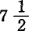

第二十四章所谓原始积累
1.原始积累的秘密
我们已经知道，货币怎样转化为资本，资本怎样产生剩余价值，剩余价值又怎样产生更多的资本。但是，资本积累以剩余价值为前提，剩余价值以资本主义生产为前提，而资本主义生产又以商品生产者握有较大量的资本和劳动力为前提。因此，这整个运动好像是在一个恶性循环中兜圈子，要脱出这个循环，就只有假定在资本主义积累之前有一种“原始”积累（亚当·斯密称为“预先积累”），这种积累不是资本主义生产方式的结果，而是它的起点。
这种原始积累在政治经济学中所起的作用，同原罪在神学中所起的作用几乎是一样的。亚当吃了苹果，人类就有罪了。[461]人们在解释这种原始积累的起源的时候，就像在谈过去的奇闻逸事。在很久很久以前有两种人，一种是勤劳的，聪明的，而且首先是节俭的精英，另一种是懒惰的，耗尽了自己的一切，甚至耗费过了头的无赖汉。诚然，神学中关于原罪的传说告诉我们，人怎样被注定必须汗流满面才得口；而经济学中关于原罪的故事则向我们揭示，怎么会有人根本不需要这样做。但是，这无关紧要。于是出现了这样的局面：第一种人积累财富，而第二种人最后除了自己的皮以外没有可出卖的东西。大多数人的贫穷和少数人的富有就是从这种原罪开始的；前者无论怎样劳动，除了自己本身以外仍然没有可出卖的东西，而后者虽然早就不再劳动，但他们的财富却不断增加。例如梯也尔先生为了替所有权辩护，甚至带着政治家的严肃神情，向一度如此富有才华的法国人反复叨念这种乏味的儿童故事。但是，一旦涉及所有权问题，那么坚持把儿童读物的观点当作对于任何年龄和任何发育阶段都是惟一正确的观点，就成了神圣的义务。[462]大家知道，在真正的历史上，征服、奴役、劫掠、杀戮，总之，暴力起着巨大的作用。但是在温和的政治经济学中，从来就是田园诗占统治地位。正义和“劳动”自古以来就是惟一的致富手段，自然，“当前这一年”总是例外。事实上，原始积累的方法决不是田园诗式的东西。
货币和商品，正如生产资料和生活资料一样，开始并不是资本。它们需要转化为资本。但是这种转化本身只有在一定的情况下才能发生，这些情况归结起来就是：两种极不相同的商品占有者必须互相对立和发生接触；一方面是货币、生产资料和生活资料的所有者，他们要购买他人的劳动力来增殖自己所占有的价值总额；另一方面是自由劳动者，自己劳动力的出卖者，也就是劳动的出卖者。自由劳动者有双重意义：他们本身既不像奴隶、农奴等等那样，直接属于生产资料之列，也不像自耕农等等那样，有生产资料属于他们，相反地，他们脱离生产资料而自由了，同生产资料分离了，失去了生产资料。商品市场的这种两极分化，造成了资本主义生产的基本条件。资本关系以劳动者和劳动实现条件的所有权之间的分离为前提。资本主义生产一旦站稳脚跟，它就不仅保持这种分离，而且以不断扩大的规模再生产这种分离。因此，创造资本关系的过程，只能是劳动者和他的劳动条件的所有权分离的过程，这个过程一方面使社会的生活资料和生产资料转化为资本，另一方面使直接生产者转化为雇佣工人。因此，所谓原始积累只不过是生产者和生产资料分离的历史过程。这个过程所以表现为“原始的”，因为它形成资本及与之相适应的生产方式的前史。
资本主义社会的经济结构是从封建社会的经济结构中产生的。后者的解体使前者的要素得到解放。
直接生产者，劳动者，只有当他不再束缚于土地，不再隶属或从属于他人的时候，才能支配自身。其次，他要成为劳动力的自由出卖者，能把他的商品带到任何可以找到市场的地方去，他就必须摆脱行会的控制，摆脱行会关于学徒和帮工的制度以及关于劳动的约束性规定。因此，使生产者转化为雇佣工人的历史运动，一方面表现为生产者从农奴地位和行会束缚下解放出来；对于我们的资产阶级历史学家来说，只有这一方面是存在的。但是另一方面，新被解放的人只有在他们被剥夺了一切生产资料和旧封建制度给予他们的一切生存保障之后，才能成为他们自身的出卖者。而对他们的这种剥夺的历史是用血和火的文字载入人类编年史的。
工业资本家这些新权贵，不仅要排挤行会的手工业师傅，而且要排挤占有财富源泉的封建主。从这方面来说，他们的兴起是战胜了封建势力及其令人愤恨的特权的结果，也是战胜了行会及其对生产的自由发展和人对人的自由剥削所加的束缚的结果。但是，工业骑士之所以能够排挤掉佩剑骑士，只是因为他们利用了与自己毫不相干的事件。他们借以兴起的手段，同罗马的被释奴隶成为自己保护人的主人所使用的手段同样卑鄙。
劳动者的奴役状态是产生雇佣工人和资本家的发展过程的起点。这一发展过程就是这种奴役状态的形式变换，就是封建剥削转化为资本主义剥削。要了解这一过程的经过，不必追溯太远。虽然在14和15世纪，在地中海沿岸的某些城市已经稀疏地出现了资本主义生产的最初萌芽，但是资本主义时代是从16世纪才开始的。在这个时代来到的地方，农奴制早已废除，中世纪的顶点——主权城市也早已衰落。
在原始积累的历史中，对正在形成的资本家阶级起过推动作用的一切变革，都是历史上划时代的事情；但是首要的因素是：大量的人突然被强制地同自己的生存资料分离，被当作不受法律保护的无产者抛向劳动市场。对农业生产者即农民的土地的剥夺，形成全部过程的基础。这种剥夺的历史在不同的国家带有不同的色彩，按不同的顺序、在不同的历史时代通过不同的阶段。只有在英国，它才具有典型的形式，因此我们拿英国作例子。(1)
2.对农村居民土地的剥夺
在英国，农奴制实际上在14世纪末期已经不存在了。当时，尤其是15世纪，绝大多数人口(2)是自由的自耕农，尽管他们的所有权还隐藏在封建的招牌后面。在较大的封建领地上，过去本身也是农奴的管事，被自由的租地农场主排挤了。农业中的雇佣工人包括两种人，一种是利用空闲时间为大土地所有者做工的农民，一种是独立的、相对说来和绝对说来人数都不多的真正的雇佣工人阶级。甚至后者实际上也是自耕农，因为除了工资，他们还分得4英亩或更多一些的耕地和小屋。此外，他们又和真正的农民共同利用公有地，在公有地上放牧自己的牲畜和取得木材、泥炭等燃料。(3)在欧洲一切国家中，封建生产的特点是土地分给尽可能多的臣属。同一切君主的权力一样，封建主的权力不是由他的地租的多少，而是由他的臣民的人数决定的，后者又取决于自耕农的人数。(4)因此，虽然英国的土地在诺曼人入侵[464]后分为巨大的男爵领地，往往一个男爵领地就包括九百个盎格鲁撒克逊旧领地，但是小农户仍然遍布全国，只是在有些地方穿插有较大的封建领地。这些情况，加上代表15世纪特点的城市繁荣，就使大法官福蒂斯丘在其《谈谈英国法律的优越性》一书中十分雄辩地描述过的人民财富能够产生出来，但是这些情况是排斥资本财富的。
为资本主义生产方式奠定基础的变革的序幕，是在15世纪最后30多年和16世纪最初几十年演出的。由于封建家臣（这些封建家臣，正如詹姆斯·斯图亚特爵士正确指出的，“到处都无用地塞满了房屋和城堡”[465]）的解散，大量不受法律保护的无产者被抛向劳动市场。虽然王权——它自己也是资产阶级发展的一个产物——在追求绝对权力时，用暴力加速了这些家臣的解散，但王权决不是这件事情的惟一原因。不如说，同王室和议会顽强对抗的大封建主，通过把农民从土地（农民对土地享有和封建主一样的封建权利）上强行赶走，夺去他们的公有地的办法，造成了人数更多得无比的无产阶级。在英国，特别是佛兰德毛纺织工场手工业的繁荣，以及由此引起的羊毛价格的上涨，对这件事起了直接的推动作用。大规模的封建战争[466]已经消灭了旧的封建贵族，而新的封建贵族则是他们自己的时代的儿子，对这一时代说来，货币是一切权力的权力。因而，把耕地转化为牧羊场就成了他们的口号。哈里逊在其著作《英国概述》（载于霍林舍德的编年史的卷首）中，描述了对小农的剥夺给国家造成了多么大的破坏。他写道：“我们的大掠夺者什么也不在乎！”农民的住房和工人的小屋被强行拆除，或者任其坍毁。哈里逊说：
“我们对照一下每一个骑士领地的旧财产清单，就会发现，无数的房屋和小农户消失了；现在土地供养的人口少得多了；虽然有一些新的城市繁荣起来，但是很多城市衰落了……城市和乡村为了作牧羊场而被毁坏，只有领主的房屋保留下来，这类情况我也能谈一些。”
这些老的编年史家的抱怨总是夸大的，但是他们准确地描绘了生产关系的革命给当时的人们造成的印象。把大法官福蒂斯丘的著作与大法官托马斯·莫尔的著作比较一下，我们就会清楚地看见15世纪和16世纪之间的鸿沟。桑顿说得对，英国工人阶级没有经过任何过渡阶段就从自己的黄金时代陷入了黑铁时代。
立法被这一变革吓住了。它还没有达到这样的文明程度：把“国民财富”，也就是把资本的形成、对人民群众的残酷剥削和他们的贫穷化当作全部国策的极限。培根在他的亨利七世执政史中说道：
“这时〈1488年〉人们越来越多地抱怨把耕地转化为少数牧人就可照管的牧场〈牧羊场等〉；定期租地、终身租地和年度租地（很多自耕农靠年度租地生活）转化为领地。这使人民衰落，因而使城市、教会、什一税也衰落……国王和当时的议会为医治这一弊端表现出的智慧是值得赞叹的……
他们采取措施来制止对公有地的灭绝人口的掠夺，来制止随之而来的灭绝人口的牧场的形成。”
1489年亨利七世颁布的第19号法令，禁止拆毁附有20英亩以上土地的农民房屋。亨利八世二十五年颁布的法令，又重申这条法律。其中谈到：
“很多租地和大畜群，特别是大羊群，集中在少数人手中，因此地租飞涨，耕地荒芜，教堂和房屋被毁，无力养家口的人多得惊人。”
因此法律规定重建那些荒废了的农场，制定耕地和牧场的比例等等。1533年的一项法令抱怨不少所有者拥有24000只羊，于是限定不得超过2000只。(5)但是，人民的抱怨和从亨利七世以来150年内相继颁布的禁止剥夺小租地农民和农民的法律，都同样毫无效果。它们毫无效果的秘密，培根已经不自觉地透露给我们了。他在《文明与道德论文集》第29节中写道：
“亨利七世的法令是深思熟虑的和值得赞赏的，因为它建立了一定标准的农场和农舍，也就是说，为农场和农舍保持一定数量的土地，使它们能提供相当富裕的、不是处于奴隶地位的臣民，并能使耕犁掌握在所有者手中，而不是掌握在雇工手中。”(6)
但是，资本主义制度却正是要求人民群众处于奴隶地位，使他们本身转化为雇工，使他们的劳动资料转化为资本。在这一过渡时期中，立法也曾力图使农业雇佣工人的小屋保有4英亩土地，并且禁止他们以自己的小屋招揽房客。1627年，在查理一世的时候，丰特米尔的罗杰·克罗克在丰特米尔的领地上修建一座小屋时，还因没有拨出4英亩土地作为小屋的永久附属物而被判罪；1638年，在查理一世的时候，还任命了一个皇家委员会来监督旧法律的实施，特别是关于4英亩土地的法律的实施；克伦威尔还禁止在伦敦周围4英里的地区内修建未附有4英亩土地的房屋。在18世纪上半叶，如果农业工人的小屋未附有1—2英亩土地，他还会到法院去控告。但是现在，如果小屋附有一个小园子，或者在远离小屋的地方可以租到一点点土地，就是很幸运的了。汉特医生说：
“地主和租地农场主在这方面是行动一致的。他们认为，小屋附有几英亩土地就会使工人过于独立。”(7)
在16世纪，宗教改革和随之而来的对教会地产的大规模的盗窃，使暴力剥夺人民群众的过程得到新的惊人的推动。在宗教改革的时候，天主教会是英国相当大一部分土地的封建所有者。对修道院等的压迫，把住在里面的人抛进了无产阶级行列。很大一部分教会地产送给了贪得无厌的国王宠臣，或者非常便宜地卖给了投机的租地农场主和市民，这些人把旧的世袭佃户大批地赶走，把他们耕种的土地合并在一起。法律保证贫苦农民对一部分教会什一税的所有权，也被暗中取消了。(8)伊丽莎白女王一次巡视英格兰之后叫喊说：“穷人到处受苦难。”[467]在她执政的第四十三年，终于不得不通过征收济贫税而正式承认有需要救济的贫民。
“这一法律的起草人不好意思说明起草该法律的理由，因此一反惯例，未附有任何说明性的序言就把该法律公布了。”(9)
查理一世十六年颁布的第4号法令宣布这项法律是永久性的，事实上只是在1834年，这项法律才获得新的更严格的形式。(10)宗教改革的这些直接的影响并不是它的最持久的影响。教会所有权是古老的土地所有权关系的宗教堡垒。随着这一堡垒的倾覆，这些关系也就不能维持了。(11)
在17世纪最后几十年，自耕农即独立农民还比租地农民阶级的人数多。他们曾经是克伦威尔的主要力量，甚至麦考莱也承认，他们同酗酒的劣绅及其奴仆，不得不替主人把他的弃妾嫁出去的乡村牧师相比，处于有利的地位。甚至农业雇佣工人也仍然是公有地的共有者。大约在1750年，自耕农消灭了(12)，而在18世纪最后几十年，农民公有地的最后痕迹也消灭了。我们在这里不谈农业革命的纯经济原因。我们只来研究一下它的暴力手段。
在斯图亚特王朝复辟时期，土地所有者通过立法实行掠夺，而这种掠夺在大陆各处都是不经过立法手续就直接完成了的。他们取消了封建的土地制度，也就是使土地摆脱了对国家的贡赋，以对农民和其他人民群众的课税来“补偿”国家，他们要求对地产的现代私有权（他们对地产只有封建权利），最后，他们强令实行定居法。只要把情况相应地改变一下，它们对英国农民的影响，就同鞑靼人波里斯·戈东诺夫的命令对俄国农民的影响一样[468]。
“光荣革命”[469]把地主、资本家这些谋利者同奥伦治的威廉三世(13)一起推上了统治地位。他们开辟了一个新时代，使以前只是有节度地进行的对国有土地的盗窃达到了巨大的规模。这些土地被赠送出去了，被非常便宜地卖掉了，或者被用直接掠夺的办法合并到私人地产中去了。(14)所有这一切都是在丝毫不遵守法律成规的情况下完成的。用这种欺骗的方法攫取的国有土地和从教会夺来的土地，既然在共和革命[470]中没有再度失去，就构成现今英国寡头政治的贵族领地的基础。(15)市民资本家鼓励这种做法，为的是把土地转化为纯粹的商品，扩大农业大规模生产的范围，增加来自农村的不受法律保护的无产者的供给等等。并且，新土地贵族又是新银行巨头这一刚刚孵化出来的金融显贵和当时靠保护关税支持的大手工工场主的自然盟友。英国资产阶级为了自身利益做得同瑞典的市民一样正确，虽然后者的做法相反：他们同自己的经济堡垒即农民协同一致，支持国王用暴力从寡头政府手中夺回王室土地（从1604年开始，后来在查理十世和查理十一世时继续进行）。
公有地——同刚才谈的国有土地完全不同——是一种在封建制度掩护下保存下来的古代日耳曼制度。我们已经知道，对公有地的暴力掠夺大都伴有把耕地转化为牧场的现象，它开始于15世纪末，在16世纪还在继续下去。但是，当时这一过程是作为个人的暴力行为进行的，立法曾同这种暴力行为斗争了150年而毫无效果。18世纪的进步表现为：法律本身现在成了掠夺人民土地的工具，虽然大租地农场主同时也使用自己独立的私人小手段。(16)这种掠夺的议会形式就是“公有地圈围法”，换句话说，是地主借以把人民的土地当作私有财产赠送给自己的法令，是剥夺人民的法令。弗·莫·伊登爵士企图把公有地说成是代替封建主的大土地所有者的私有地，但是他自己把这种狡黠的辩护词否定了，因为他要求“为公有地的圈围制定一般性的议会法令”，即承认要把公有地转化为私有地必须由议会采取非常措施，另一方面，他又要求立法对被剥夺的贫民给予“赔偿”。(17)
当任意租户，即按一年期限租佃土地的小租地农民，一群奴隶般地完全听大地主摆布的人，代替独立的自耕农时，对国有土地的掠夺，特别是对公有地的不断的盗窃，促使在18世纪叫作资本租地农场(18)或商人租地农场(19)的大租地农场增长，并且促使农村居民变成无产阶级，把他们“游离”出来投向工业。
但是，18世纪的人还不像19世纪的人那样清楚地了解到，国民财富和人民贫穷是一回事。因此，当时经济著作中就有关于“公有地的圈围”的十分激烈的论战。我从手边的大量材料[472]中只摘录几段话，因为这几段话能生动地说明当时的情况。
一位作者愤慨地写道：
“在赫特福德郡的很多教区中，有24个平均占50—150英亩土地的租地农场被合并为3个租地农场了。”(20)“在北安普敦郡和莱斯特郡，圈围公有地的做法十分流行，由于圈地而形成的新领地大部分都变成牧场；结果在很多领地中，现在耕地还不到50英亩，而过去耕种的有1500英亩……过去的住宅、谷仓、马厩等等变成的废墟”是以往居民留下的惟一痕迹。“在某些地方，100所房屋和家庭已经减少到……8所或10所……在大多数不过15年或20年前才开始圈地的教区，土地所有者的数目同以前耕种开放地的土地所有者的人数相比是很少的。往往还有这样的事情，4—5个富有的畜牧业主侵吞了不久前圈围的大片领地，这些土地以前是在20—30个租地农民和同样数目的较小的所有者以及其他居民的手里。所有这些人和他们的家属，从自己占有的土地上被赶走，同他们一起被赶走的，还有替他们做工以维持生活的许多其他家庭。”(21)
邻近的地主在圈地的借口下，不仅侵占了荒地，而且往往也侵占了个人以一定的租金向公社租来耕种的土地或共同耕种的土地。
“我这里是说开放地和已耕地的圈围。甚至为圈地辩护的作者也承认，圈地加强了大租地农场的垄断地位，提高了生活资料的价格，造成了人口的减少……甚至像现在这样进行的荒地的圈围，也使贫民失去他们的一部分生存资料，而把本来已经过大的租地农场更加扩大。”(22)
普赖斯博士说：
“如果土地落到少数大租地农场主手中，那么小租地农民〈以前他是指“许多小土地所有者和小租地农民，他们靠自己耕种的土地上的产品和在公有地上放养的羊、家禽、猪等来维持自己和家庭的生活，因此几乎不必购买生存资料”〉就要转化为这样一种人，他们必须为别人劳动才能维持生活，而且不得不到市场上去购买自己所需要的一切……劳动也许加重了，因为对劳动的强制更大了……城市和手工工场将会扩大，因为将有更多寻找职业的人被赶到那里去。这就是租地农场的集中必然发生作用的道路，也是这种集中多年以来在这个王国中实际发生作用的道路。”(23)
他把圈地的总的结果概括如下：
“总的说来，下层人民的状况几乎在各方面都恶化了，小土地占有者和小租地农民降到短工和雇工的地位；同时，在这种情况下谋生变得更加困难了。”(24)
确实，对公有地的掠夺和随之而来的农业革命，对农业工人产生十分强烈的影响，伊登自己就说，农业工人的工资在1765—1780年之间开始降到最低限度以下，因此必须由官方的济贫费来补助。他说，他们的工资“只够满足绝对必要的生活需要”。
现在我们再听一下一位圈地卫护者，普赖斯博士的反对者的意见。
“因为不再看见人们在开放地上浪费自己的劳动，就得出人口减少的结论，这是不对的……如果在小农转化为不得不替别人劳动的人之后，可以把更多的劳动动用起来，那么，这是国民〈那些已经经历转化的农民当然不在此列〉应当期待的一种利益……如果他们的结合的劳动在一个租地农场上使用，产品就会更多：这样就可以为工场手工业创造出剩余产品，从而工场手工业，这个国家的金矿之一，就会随着生产出的谷物量的增加而相应增加。”(25)
对“神圣的所有权”进行最无耻的凌辱，对人身施加最粗暴的暴力，只要这是为建立资本主义生产方式的基础所需要的，政治经济学家就会以斯多亚派[474]的平静的心情来加以观察。带有托利党色彩的“博爱的”弗·莫·伊登爵士就是一个例子。从15世纪最后30多年到18世纪末，伴随着对人民的暴力剥夺的是一连串的掠夺、残暴行为和人民的苦难，这些只不过使他得出下面这个“称心如意的”结论：
“必须确定耕地和牧场之间的适当的比例。在整个14世纪和15世纪的大部分时期，还要有2、3英亩甚至4英亩耕地才有1英亩牧场。在16世纪中叶，这个比例变为3英亩牧场对2英亩耕地，后来是2英亩牧场对1英亩耕地，直到最后达到3英亩牧场对1英亩耕地这个适当的比例。”
到19世纪，人们自然甚至把农民和公有地之间的联系都忘却了。更不必谈最近的时期：1801年到1831年农村居民被夺去3511770英亩公有地，并由地主通过议会赠送给地主，难道农村居民为此得到过一文钱的补偿吗？(26)
最后，对农民土地的最后一次大规模剥夺过程，是所谓的Clearng of Estates（清扫领地，实际上是把人从领地上清扫出去）。“清扫”是前面谈过的英国的一切剥夺方法的顶点。我们在上面谈到现代状况时知道，在已经没有独立农民可以清扫的地方，现在是要把小屋“清扫”掉，结果农业工人在他们耕种的土地上甚至再也找不到必要的栖身之所了。至于“清扫领地”的真正含意，我们只有看看苏格兰高地这个现代小说中的天国，才可以领会。在那里，这个过程有下列特点：它有系统性，有一举完成的巨大规模（在爱尔兰，地主同时把好几个村庄清扫掉；在苏格兰高地，一下子被清扫的土地面积相当于德意志几个公国），最后，还有被侵吞的土地所有权的特殊形式。
苏格兰高地的克尔特人由克兰(27)组成，每一克兰是该克兰所居住的土地的所有者。克兰的代表，即克兰的首领或“大人”，只是这块土地名义上的所有者，就像英国女王是全国土地名义上的所有者完全一样。英国政府虽然成功地镇压了这些“大人”之间的内部战争，制止了他们对苏格兰低地的不断侵袭，但是克兰首领们丝毫没有放弃自己原来的劫掠行径；他们只不过改变了形式而已。他们依靠自己的权威，把他们名义上的所有权转化为私有财产权，由于遭到克兰成员的反抗，他们就决定公开使用暴力把克兰成员驱逐出去。纽曼教授说：
“英国国王可以自以为有同样的权利把自己的臣民赶下大海。”(28)
在苏格兰，这次革命是在拥护王位觊觎者的人进行了最后一次武装暴动[475]后开始的，我们可以从詹姆斯·斯图亚特爵士(29)和詹姆斯·安德森(30)的著作中看到这次革命的最初阶段。在18世纪，还禁止从土地上被赶走的盖尔人[477]移居外国，以便用暴力把他们赶到格拉斯哥和其他工业城市去。(31)至于19世纪盛行的方法(32)，在这里以萨瑟兰公爵夫人进行的“清扫”作例子就够了。这位懂得经济学的女人一当权，就决定对经济进行彻底的治疗，并且把全郡——郡内的人口通过以前的类似过程已经减少到15000人——转化为牧羊场。从1811年到1820年，这15000个居民，大约3000户，陆续地遭到驱逐和灭绝。他们居住的所有村庄都被破坏和烧毁，他们的所有田地都被变为牧场。不列颠的士兵被派来执行这种暴行，同当地居民发生了搏斗。一个老太太因拒绝离开小屋而被烧死在里面。这位夫人通过这种方式把自古以来属于克兰的794000英亩土地攫为己有。她把沿海地区大约6000英亩的土地分配给这些被驱逐的居民，每户2英亩。这6000英亩土地原来一直是荒地，并没有给所有者带来过收入。这位公爵夫人如此宽宏大量，她以平均每英亩2先令6便士的租金把这些荒地租给那些几百年来为她的家族流血流汗的克兰成员。她把掠夺来的全部克兰土地划分为29个大牧羊租地农场，每一个租地农场只住一户人家，大部分都是英格兰租地农场主的雇农。到1820年，15000个盖尔人已被131000只羊所代替。一部分土著居民被赶至沿海地区，以捕鱼为生。他们变成了两栖动物，按一位英国作家的说法，是一半生活在陆上，一半生活在水上，但是陆上和水上合起来也只能使他们过半饱的生活。(33)
但是，诚实的盖尔人由于他们对克兰“大人”的山岳般浪漫的崇拜，必须更加含辛茹苦。鱼的气味传到“大人”的鼻子里去了。他们嗅到其中有某种有利可图的东西，于是把沿海地区租给伦敦的大鱼商。盖尔人又一次被驱逐了。(34)
最后，一部分牧羊场又转化为狩猎场。大家知道，英格兰没有真正的森林。贵族们的鹿苑中的鹿长得像家畜，肥得像伦敦的市议员一样。所以，苏格兰是这种“高贵情欲”的最后的寄托所。1848年萨默斯写道：
“在苏格兰高地，森林面积大大扩大了。在盖克的一边，可以看见格伦费希新森林，在另一边，是阿德韦里基新森林。在同一条线上，布莱克山这一大片荒地不久前植树造林了。从东到西，从阿伯丁附近到奥本峭壁，现在都是一条连绵不断的林带，而在高地的其他地方，又有阿尔恰格湖、格伦加里、格伦莫里斯顿等新森林出现……盖尔人由于他们的土地转化为牧羊场……而被赶到更贫瘠的地方。现在鹿开始代替羊，使盖尔人更加贫困……鹿林(35)和人民不能并存。总有一方要让位。如果在未来的25年当中，狩猎场的数目和规模像过去25年那样增长，那么盖尔人就会在他们家乡的土地上绝迹了。苏格兰高地土地所有者中间进行的这个运动，一方面是出于时髦，贵族的欲望，打猎的爱好等等；另一方面，他们做鹿的交易只是为了牟取利润。因为事实是，把一块山地辟为狩猎场，在很多情况下都比把它变为牧羊场有利得多……对于爱好打猎而寻找狩猎场的人说来，出价高低只受自己钱袋大小的限制……苏格兰高地所受的痛苦，不下于诺曼人国王的政策给英格兰带来的痛苦。鹿有了更自由的活动场所，而人却被赶到越来越窄的圈子里去了……人民的自由接二连三地被夺去……压迫日甚一日。清扫和驱逐人民，像在美洲和澳洲的荒野上砍除树木和灌木丛一样，被当作固定的原则，当作农业上的必要措施，由地主们来实行；这一过程静静地、有条不紊地进行着。”(36)
掠夺教会地产，欺骗性地出让国有土地，盗窃公有地，用剥夺方法、用残暴的恐怖手段把封建财产和克兰财产转化为现代私有财产——这就是原始积累的各种田园诗式的方法。这些方法为资本主义农业夺得了地盘，使土地与资本合并，为城市工业造成了不受法律保护的无产阶级的必要供给。
3.15世纪末以来惩治被剥夺者的血腥立法。压低工资的法律
由于封建家臣的解散和土地断断续续遭到暴力剥夺而被驱逐的人，这个不受法律保护的无产阶级，不可能像它诞生那样快地被新兴的工场手工业所吸收。另一方面，这些突然被抛出惯常生活轨道的人，也不可能一下子就适应新状态的纪律。他们大批地转化为乞丐、盗贼、流浪者，其中一部分人是由于习性，但大多数是为环境所迫。因此，15世纪末和整个16世纪，整个西欧都颁布了惩治流浪者的血腥法律。现在的工人阶级的祖先，当初曾因被迫转化为流浪者和需要救济的贫民而受到惩罚。法律把他们看作“自愿的”罪犯，其依据是：只要他们愿意，是可以继续在已经不存在的旧的条件下劳动的。
在英国，这种立法是在亨利七世时期开始的。
亨利八世时期，1530年，年老和无劳动能力的乞丐获得一种行乞许可证。相反地，身强力壮的流浪者则要遭到鞭打和监禁。他们要被绑在马车后面，被鞭打到遍体流血为止，然后要发誓回到原籍或最近3年所居住的地方去“从事劳动”。多么残酷的讽刺！亨利八世二十七年，以前的法令又加以重申，但由于加上了新的条款而更严厉了。如果在流浪时第二次被捕，就要再受鞭打并被割去半只耳朵；如果第三次被捕，就要被当作重罪犯和社会的敌人处死。
爱德华六世在他即位的第一年（1547年）颁布的法令规定，拒绝劳动的人，如被告发为游惰者，就要判为告发者的奴隶。主人应当用面包和水，用稀汤和他认为适当的肉屑给自己的奴隶吃。他有权用鞭打和镣铐强迫奴隶从事一切令人厌恶的劳动。如果奴隶逃亡达14天，就要判为终身奴隶，并在额头或脸颊打上S字样(37)的烙印；如果第三次逃亡，就要当作叛国犯处死。主人可以把他出卖，遗赠，作为奴隶出租，完全像对待其他动产和牲畜一样。如果奴隶图谋反抗主人，也要被处死。治安法官必须根据报告搜捕逃亡的奴隶。如果发现流浪者3天无所事事，就要把他送回原籍，用烧红的铁器在他胸前打上V字样(38)的烙印，套上锁链在街道上服役或服其他劳役。如果流浪者谎报籍贯，就要被罚充当该地、该地居民或社团的终身奴隶，并打上S字样的烙印。任何人都有权把流浪者的子女领去当学徒，男的当到24岁为止，女的当到20岁为止。如果他们逃亡，就要成为他们师傅的奴隶，直到这个年龄为止。师傅随意可以给他们戴上镣铐，鞭打他们等等。为了便于识别和更加保险起见，每个主人可以在自己奴隶的脖子、手或脚上套一个铁环。(39)这个法令的最后一部分规定，贫民必须在愿意给他们饮食和劳动的地区或个人那里干活。在英国，这种教区的奴隶，在游荡者的名义下一直保留到19世纪。
伊丽莎白执政时期的1572年的法令规定，没有得到行乞许可的14岁以上的乞丐，如果没有人愿意使用他一年，就要受猛烈的鞭打，并在右耳打上烙印；如果有人再度行乞而且年过18，又没有人愿意使用两年，就要被处死；第三次重犯，就要毫不容情地当作叛国犯处死。类似的法令还有伊丽莎白十八年所颁布的第3号法令和1597年的法令。(40)
詹姆斯一世时期，游荡和行乞的人被宣布为流浪者。即决法庭[480]的治安法官有权叫人当众鞭打他们，把第一次被抓到的监禁6个月，第二次被抓到的监禁2年。在监禁期间，治安法官认为适当就可以随时鞭打他们，要打多少就打多少……不可救药的危险的流浪者，要在左肩打上R字样(41)的烙印，并要从事强制劳动；如果他再度在行乞时被抓到，那就要毫不容情地处死。这些条例直到18世纪初还有效，到安女王十二年颁布第23号法令时才被废除。
法国也有同样的法律，因为17世纪中叶在巴黎曾经建立了一个流浪者王国。在路易十六初期（1777年7月13日的敕令）还规定，16岁至60岁的身体强壮而没有生存资料或职业的人，都要罚做苦工。1531年10月查理五世对尼德兰颁布的法令，1614年3月19日荷兰各州和各城市的第1号告示，1649年6月25日联合省的公告等，都有类似的规定。
这样，被暴力剥夺了土地、被驱逐出来而变成了流浪者的农村居民，由于这些古怪的恐怖的法律，通过鞭打、烙印、酷刑，被迫习惯于雇佣劳动制度所必需的纪律。
单是在一极有劳动条件作为资本出现，在另一极有除了劳动力以外没有东西可出卖的人，还是不够的。这还不足以迫使他们自愿地出卖自己。在资本主义生产的进展中，工人阶级日益发展，他们由于教育、传统、习惯而承认这种生产方式的要求是理所当然的自然规律。发达的资本主义生产过程的组织粉碎一切反抗；相对过剩人口的不断产生把劳动的供求规律，从而把工资限制在与资本增殖需要相适应的轨道以内；经济关系的无声的强制保证资本家对工人的统治。超经济的直接的暴力固然还在使用，但只是例外地使用。在通常的情况下，可以让工人由“生产的自然规律”去支配，即由他对资本的从属性去支配，这种从属性由生产条件本身产生，得到这些条件的保证并由它们永久维持下去。在资本主义生产在历史上刚刚产生的时期，情况则不同。新兴的资产阶级为了“规定”工资，即把工资强制地限制在有利于赚钱的界限内，为了延长工作日并使工人本身处于正常程度的从属状态，就需要并运用国家权力。这是所谓原始积累的一个重要因素。
雇佣工人阶级是在14世纪下半叶产生的，它在当时和后一世纪内只占居民中很小的一部分；它的地位受到农村的独立农民经济和城市的行会组织的有力的保护。在农村和城市，雇主和工人在社会上是接近的。劳动对资本的从属只是形式上的，就是说，生产方式本身还不具有特殊的资本主义的性质。资本的可变要素大大超过它的不变要素。因此，对雇佣劳动的需求随着资本的积累而迅速增加，而雇佣劳动的供给只是缓慢地跟在后面。后来转化为资本积累基金的一大部分国民产品，在当时还是工人的消费基金。
自始就是为了剥削工人，而在其发展中一直与工人为敌的关于雇佣劳动的立法(42)，在英国开始于1349年爱德华三世的劳工法。在法国，与此相当的是1350年以国王约翰名义颁布的敕令。英法两国的立法齐头并进，内容也相同。关于劳工法企图强制延长工作日这一点，我就不再谈了，因为前面（第8章第5节(43)）已经讲过了。
劳工法是由于下院的迫切要求而颁布的。一个托利党人天真地说：
“以前贫民要求的工资太高，使工业和财富受到威胁。现在他们的工资太低，也使工业和财富受到威胁，不过这种威胁和以前的不同，而且可能更危险。”(44)
法律规定了城市和农村、计件劳动和日劳动的工资率。农村工人受雇期限应为一年，城市工人则应在“自由市场”上受雇。支付高于法定工资的人要被监禁，但接受高工资的人要比支付高工资的人受到更严厉的处罚。例如，伊丽莎白的学徒法第18条和第19条也还规定，支付高工资的人，监禁10天，而接受的人，则监禁21天。1360年的一项法令加重了处罚，甚至授权雇主按法定的工资率通过体罚去榨取劳动。把瓦匠和木匠相互联系在一起的一切结合、契约、誓约等都被宣告无效。从14世纪起到1825年废除禁止结社法止，工人结社一直被认为是严重的犯罪行为。1349年的劳工法和以后的类似法令的精神清楚地表现在这一事实上：国家虽然规定了工资的最高限度，但从来没有规定工资的最低限度。
大家知道，在16世纪，工人的状况十分恶化(45)。货币工资提高了，但其提高的程度不及货币贬值和物价相应上涨的程度。因此，工资实际上是下降了。但是，旨在压低工资的法律仍然有效，同时，“没有人愿意使用”的人要被割耳朵和打烙印。伊丽莎白五年颁布的第4号法令学徒法，授权治安法官规定一定的工资，并按季节和物价加以调整。詹姆斯一世也把这种有关劳动的规定推行到纺织工人和其他各种工人身上。(46)乔治二世把禁止工人结社的法律推行到一切工场手工业。
在真正的工场手工业时期，资本主义生产方式已经相当强大，因而用法律来规定工资已经行不通而且没有必要，但是人们为了防备万一，还不想抛弃旧武库中的这件武器。在乔治三世七年，除国丧期外，伦敦及其近郊的裁缝帮工的日工资还禁止超过2先令便士；乔治三世十三年颁布的第68号法令还授权治安法官规定丝织工人的工资；在1796年，治安法官关于工资的命令是否也适用于非农业工人，还需要经过高等法院的两次判决来确定；在1799年，一项议会法令还确认，苏格兰矿工的工资要根据伊丽莎白的一项法令和1661年及1617年的两项苏格兰法令来规定。在此期间情况有了多大的变化，这可由英国下院的一件前所未闻的事情来说明。在这里，400多年来人们都是制定法律来规定工资决不能超过的最高限度，而在1796年，惠特布雷德建议用法律规定农业短工工资的最低限度。皮特表示反对，但承认“贫民的状况是悲惨的”。最后，在1813年，规定工资的法律被废除了。自从资本家以其私人立法来管理工厂，并依靠济贫税把农业工人的工资补充到必要的最低限度以来，这些法律就变成了可笑的反常的东西。但是劳工法中有关雇主和雇佣工人之间的契约以及解约期限等条款，直到现在还完全有效，这些条款规定，对违约的雇主只许提出民事诉讼，而对违约的工人则可提出刑事诉讼。
残酷的禁止结社法于1825年在无产阶级的威胁性行动面前取消了。虽然如此，但取消的只是其中一部分。旧法令某些美丽的残片直到1859年才消失。最后，1871年6月29日的议会法令，在法律上承认工联时就认为消除了这项阶级立法的最后痕迹。但是，同一天颁布的一项议会法令（关于惩治暴行、胁迫和侵害行为的刑法修正法令），实际上以新的形式恢复了旧的状态。这种议会把戏，使工人在罢工或同盟歇业（结成同盟的工厂主同时把工厂关闭）时可能利用的手段都不按普通法来处理，而按特别刑法来处理，而这个刑法的解释权又操在担任治安法官的工厂主本人手中。两年前，同一个下院和同一个格莱斯顿先生，以人所共知的正直态度提出了一项废除一切反对工人阶级的特别刑法的法案。但是这个法案只二读了事，这样，问题就被搁置下来，直到后来，“伟大的自由党”[482]同托利党结成联盟，竟然鼓起勇气坚决反对扶它上台的无产阶级。“伟大的自由党”并不以这种背叛为满足，它还让一贯奴颜婢膝地为统治阶级效劳的英国法官把已经失效的禁止“秘密活动”法[483]重新挖掘出来，用来对付工人的结社。我们看到，500年来，英国议会出于卑鄙无耻的自私自利一直固守那种反抗工人的常设的资本家“工联”的地位，后来只是在群众的压力下才迫不得已地放弃了反对罢工和工联的法律。
法国资产阶级在革命风暴一开始，就胆敢再把工人刚刚争得的结社权剥夺掉。它在1791年6月14日颁布法令，宣布工人的一切结社都是“对自由和人权宣言的侵犯”，要课以500利弗尔的罚金并剥夺公民权一年。(47)这个法律用国家警察手段硬是把资本和劳动之间的斗争限制在对资本有利的范围内，它经历了几次革命和几次改朝换代。甚至恐怖政府[484]也没有触动它。直到最近它才被从刑法典[485]中取消。采取上述资产阶级非常措施的借口是最典型不过的了。报告人列沙白里哀说：“工资比现在提高一些，使领工资的人摆脱由于缺乏必要的生活资料而陷入的绝对的、几乎是奴隶般的依赖状态，这虽然是应当的”，但是工人不应当彼此商定自己的利益，不应当采取共同行动来缓和自己的“绝对的、几乎是奴隶般的依赖状态”，因为他们这样做就会损害“他们从前的老板现在的企业主的自由”（使工人保持奴隶状态的自由！），因为进行结社来反对从前公会老板的专制，就是——猜猜看！——恢复法国宪法所取消的公会！(48)
4.资本主义租地农场主的产生
我们考察了不受法律保护的无产者怎样通过暴力产生，考察了使他们转化为雇佣工人的血腥纪律，考察了国家用警察手段加强对劳动的剥削程度来提高资本积累的无耻行为。现在要问：资本家最初是从哪里来的呢？因为对农村居民的剥夺只是直接地产生了大土地所有者。至于租地农场主的产生，我们是能够弄清楚的，因为这是一个延续了许多世纪的漫长过程。农奴本身，此外还有自由小土地所有者，处于极不相同的财产状况下，因而是在极不相同的经济条件下解放出来的。
在英国，最初形式的租地农场主是本身也是农奴的管事。他的地位和古罗马的斐力卡斯(49)相似，不过活动范围狭小一些。在14世纪下半叶，管事被由地主供给种子、牲畜和农具的租地农民所代替。这种租地农民的地位同农民没有多大的区别，不过他剥削更多雇佣劳动。他不久就成为分成农，半租地农场主。他筹集农业资本的一部分，而其余部分则由地主提供。双方按合同规定的比例分配总产品。这种形式在英国很快就消失了，代之而起的是真正的租地农场主，他靠使用雇佣工人来增殖自己的资本，并把剩余产品的一部分以货币或实物的形式作为地租交给地主。
在15世纪，当独立农民和那些既当雇工同时又独自耕作的雇农靠自己的劳动而致富的时候，租地农场主的境况和生产范围都同样是中等的。15世纪最后30多年开始的、几乎在整个16世纪（但最后几十年除外）继续进行的农业革命，以同一速度使农村居民变穷，使租地农场主致富。(50)对公有牧场等的掠夺，使租地农场主几乎不费代价就大大增加了自己的牲畜数量，这些牲畜又为他的土地的耕作提供了更丰富的肥料。
在16世纪，又加进了一个有决定意义的重要因素。当时，租约的期限很长，往往达99年。贵金属价值从而货币价值的不断下降，给租地农场主带来了黄金果。把前面已经指出的其他一切情况撇开不说，这种下降也降低了工资(51)。工资的一部分变成了租地农场主的利润。谷物、羊毛、肉类，总之，一切农产品的价格不断上涨，不费租地农场主一点力气，就增大了他的货币资本，而他必须支付的地租，却是按照以前的货币价值签订在契约上的。(52)所以，他是同时靠牺牲自己的雇佣工人和地主的利益而致富的。因此，在16世纪末，英国有了一个就当时情况来说已很富有的“资本主义租地农场主”阶级，是不足为奇的。(53)
5.农业革命对工业的反作用。工业资本的国内市场的形成
我们已经知道，对农村居民断断续续的、一再重复的剥夺和驱逐，不断地为城市工业提供大批完全处于行会关系之外的无产者。(54)这一奇妙的现象使老亚·安德森（不要和詹姆斯·安德森相混）在他的商业史[486]中也相信神的直接干预。我们还必须谈一谈原始积累的这个要素。若弗鲁瓦·圣伊莱尔用世界物质在一处的稀薄化来解释它在另一处的稠密化(55)，但是，与独立的、自耕的农村居民稀薄化相适应的，不仅仅是工业无产阶级的稠密化。虽然种地的人数减少了，但土地提供的产品和过去一样多，或者比过去更多，因为伴随土地所有权关系革命而来的，是耕作方法的改进，协作的扩大，生产资料的积聚等等，因为农业雇佣工人不仅被迫加强了劳动强度(56)，而且他们为自己进行劳动的生产范围也日益缩小了。因此，随着一部分农村居民的游离，他们以前的生活资料也被游离出来。这些生活资料现在转化为可变资本的物质要素。被驱逐出来的农民必须从自己的新主人工业资本家那里，以工资的形式挣得这些生活资料的价值。国内农业提供的工业原料也同生活资料的情况一样。它转化为不变资本的一个要素。
例如，可以设想，在弗里德里希二世时代全都纺亚麻的威斯特伐里亚农民，一部分遭到暴力剥夺，被逐出土地，另一部分留下来的则转化为大租地农场主的短工。与此同时，大亚麻纺织厂出现了，“被游离出来的人”受雇在那里做工。亚麻外表上和过去完全一样。它的纤维一根也没有发生变化，但是一个新的社会灵魂已经进入它的身体。它现在是手工工场主的不变资本的一部分。以前，亚麻分散在许多小生产者之间，他们自己种植亚麻，并和家人一道小量地进行纺织；现在，它积聚在一个资本家手中，他叫别人为他纺织。消耗在纺亚麻上的额外劳动以前实现为无数农民家庭的额外收入，或者在弗里德里希二世时代还实现为交给普鲁士国王的赋税。现在，它实现为少数资本家的利润。纱锭和织机以前分散在农村，现在和工人以及原料一样都集中在少数大劳动营里了。现在，纱锭、织机和原料由纺织工人独立生存的手段都转化为指挥他们(57)和榨取他们的无酬劳动的手段。大手工工场同大租地农场一样，看不出是由许多小生产单位联合而成的，是通过剥夺许多独立小生产者而形成的。但是，不带偏见的考察是不会受迷惑的。在革命狮子米拉波的时代，人们还把大手工工场叫作manufactures réunies，即联合手工工场，正如我们现在说联合耕地一样。米拉波说：
“人们只注意有几百人在一个厂长指挥下进行劳动的、通常叫作联合手工工场的大手工工场；而对人数众多的工人分散地独自经营的手工工场，几乎不屑一顾，把这些手工工场完全摆到次要的地位。这是一个很大的错误，因为只有它们才是国民财富的真正重要的组成部分……联合工场使一两个企业主大发其财，但工人不过是得到或多或少的报酬的短工，他们丝毫分享不到企业主得到的好处。相反地，在分散的工场中没有人发财致富，但许多工人过着优裕的生活…… 勤劳节俭的工人人数将会增加，因为他们将会认识到，良好的生活方式和劳动，是根本改善自己状况而不是稍许提高工资的手段；稍许提高工资对于将来决不可能是重要的事情，充其量只能使工人勉强口的生活稍微好一点。通常同小农经济结合在一起的单个分散的手工工场，才是自由的手工工场。”(58)
一部分农村居民的被剥夺和被驱逐，不仅为工业资本游离出工人及其生活资料和劳动材料，同时也建立了国内市场。
事实上，使小农转化为雇佣工人，使他们的生活资料和劳动资料转化为资本的物质要素的那些事件，同时也为资本建立了自己的国内市场。以前，农民家庭生产并加工绝大部分供自己以后消费的生活资料和原料。现在，这些原料和生活资料都变成了商品；大租地农场主出售它们，手工工场则成了他的市场。纱、麻布、粗毛织品（过去每个农民家庭都有这些东西的原料，它把这些东西纺织出来供自己消费），现在转化为工场手工业的产品，农业地区正是这些东西的销售市场。以前由于大量小生产者独自经营而造成的分散各地的许多买主，现在集中为一个由工业资本供应的巨大市场。(59)于是，随着以前的自耕农的被剥夺以及他们与自己的生产资料的分离，农村副业被消灭了，工场手工业与农业分离的过程发生了。只有消灭农村家庭手工业，才能使一个国家的国内市场获得资本主义生产方式所需要的范围和稳固性。
但是，真正的工场手工业时期并没有引起根本的改变。我们记得，工场手工业只占领国民生产的很小一部分，它总是以城市手工业和农村家庭副业作为广阔的背景(60)。它在某种形式下，在某些工业部门，在某些地方消灭城市手工业和农村家庭副业，同时又在其他地方使它们重新出现，因为它需要它们把原料加工到一定的程度。因此，它产生了一个新的小农阶级，这些小农以种地为副业，而以工业劳动为主业，把产品直接或通过商人卖给手工工场。这就是首先使研究英国历史的人困惑不解的现象所以会产生的一个原因，虽然不是主要的原因。研究英国历史的人看到，从15世纪最后30多年起怨声不断（只是有时中止），抱怨资本主义经济在农村日益发展，农民日益被消灭。另一方面他总是又看到，这些农民不断重新出现，虽然他们人数在减少，处境日益恶化。(61)主要原因在于，英国在不同的时期，有时以谷物业为主，有时以畜牧业为主，因而农民的生产范围也跟着变化。只有大工业才用机器为资本主义农业提供了牢固的基础，彻底地剥夺了极大多数农村居民，使农业和农村家庭手工业完全分离，铲除了农村家庭手工业的根基——纺纱和织布。(62)这样，它才为工业资本征服了整个国内市场。(63)
6.工业资本家的产生
工业(64) 资本家不是通过像租地农场主那样的渐进方式产生的。毫无疑问，有些小行会师傅和更多的独立小手工业者，甚至雇佣工人，转化成了小资本家，并且由于逐渐扩大对雇佣劳动的剥削和相应的积累，成为不折不扣的资本家。在中世纪城市的幼年时期，逃跑的农奴中谁成为主人，谁成为仆人的问题，多半取决于他们逃出来的日期的先后，在资本主义生产的幼年时期，情形往往也是这样。但是这种方法的蜗牛爬行的进度，无论如何也不能适应15世纪末各种大发现[490]所造成的新的世界市场的贸易需要。而中世纪已经留下两种不同形式的资本，它们是在极不相同的经济的社会形态中成熟的，而且在资本主义生产方式时期到来以前，就被当作资本，这就是高利贷资本和商人资本。
“现今，社会的一切财富首先落入资本家手中……他对土地所有者支付地租，对工人支付工资，对赋税和什一税的征收者支付他们要求的东西，而留给自己的是年劳动产品的很大一部分，其实是最大的而且日益增长的一部分。现在，资本家可以看作是全部社会财富的最先所有者，虽然没有任何一项法律给予他这种所有权……所有权方面的这种变化是由于资本的取息而产生的……同样值得注意的是，整个欧洲的立法者都想用取缔高利贷的法律来阻止这件事……资本家支配国家的全部财富的权力是所有权上的一种彻底的革命；然而这个革命是靠哪一项法律或者哪一套法律来实行的呢？”(65)
作者应该知道，革命不是靠法律来实行的。
高利贷和商业所形成的货币资本在转化为工业资本时，曾受到农村封建制度和城市行会制度的阻碍。(66) 这些限制随着封建家臣的解散，农村居民的被剥夺和一部分被驱逐而消失。新的工场手工业建立在通海港口或不受旧城市及其行会制度控制的内陆地区。因此，在英国，享有公会特权的城市对这些新的工业培养所进行了激烈的斗争。
美洲金银产地的发现，土著居民的被剿灭、被奴役和被埋葬于矿井，对东印度开始进行的征服和掠夺，非洲变成商业性地猎获黑人的场所——这一切标志着资本主义生产时代的曙光。这些田园诗式的过程是原始积累的主要因素。接踵而来的是欧洲各国以地球为战场而进行的商业战争。这场战争以尼德兰脱离西班牙[491]开始，在英国的反雅各宾战争中具有巨大的规模，并且在对中国的鸦片战争中继续进行下去，等等。
原始积累的不同因素，多少是按时间顺序特别分配在西班牙、葡萄牙、荷兰、法国和英国。在英国，这些因素在17世纪末系统地综合为殖民制度、国债制度、现代税收制度和保护关税制度。这些方法一部分是以最残酷的暴力为基础，例如殖民制度就是这样。但所有这些方法都利用国家权力，也就是利用集中的、有组织的社会暴力，来大力促进从封建生产方式向资本主义生产方式的转化过程，缩短过渡时间。暴力是每一个孕育着新社会的旧社会的助产婆。暴力本身就是一种经济力。
关于基督教殖民制度，有一位把基督教当作专业来研究的人，威·豪伊特曾这样说过：
“所谓的基督教人种在世界各地对他们所能奴役的一切民族所采取的野蛮和残酷的暴行，是世界历史上任何时期，任何野蛮愚昧和残暴无耻的人种都无法比拟的。”(67)
荷兰——它是17世纪标准的资本主义国家——经营殖民地的历史，“展示出一幅背信弃义、贿赂、残杀和卑鄙行为的绝妙图画”(68)。最有代表性的是，荷兰人为了使爪哇岛得到奴隶而在西里伯斯岛实行盗人制度。为此目的训练了一批盗人的贼。盗贼、译员、贩卖人就是这种交易的主要代理人，土著王子是主要的贩卖人。盗来的青年在长大成人可以装上奴隶船以前，被关在西里伯斯岛的秘密监狱中。一份官方报告说：
“例如，望加锡这个城市到处都是秘密监狱，一座比一座恐怖，里面挤满了不幸的人，贪欲和暴政的牺牲者，他们戴着镣铐，被强行和家人分离。”
荷兰人为了霸占马六甲，曾向葡萄牙的总督行贿。1641年总督允许他们进城。他们为了对支付21875镑贿款进行“节欲”，立即到总督住宅把他杀了。他们走到哪里，那里就变得一片荒芜，人烟稀少。爪哇的巴纽旺宜省在1750年有8万多居民，而到1811年只有8000人了。这就是温和的商业！
大家知道，英国东印度公司除了在东印度拥有政治统治权外，还拥有茶叶贸易、同中国的贸易和对欧洲往来的货运的垄断权。而印度的沿海航运和各岛屿之间的航运以及印度内地的贸易，却为公司的高级职员所垄断。对盐、鸦片、槟榔和其他商品的垄断权成了财富的取之不尽的矿藏。这些职员自定价格，任意勒索不幸的印度人。总督参与这种私人买卖。他的宠信们是在使他们这些比炼金术士聪明的人们能从无中生出金来的条件下接受契约的。巨额财产像雨后春笋般地增长起来，原始积累在不预付一个先令的情况下进行。沃伦·哈斯丁的审判记录中有很多这样的实例。举一个例子来说。有一个名叫沙利文的人，当他因公出差到印度一个离鸦片产地很远的地区时，接受了一项鸦片契约。沙利文以4万镑把他的契约卖给一个名叫本的人，本又在当天以6万镑把它转卖出去，而这张契约的最后购买者和履行者声称，他从中还赚了一大笔钱。根据一个呈报议会的表报，从1757年到1766年，东印度公司和它的职员让印度人赠送了600万镑！在1769年到1770年间，英国人用囤积全部大米，不出骇人听闻的高价就拒不出售的办法制造了一次饥荒。(69)
在像西印度那样专营出口贸易的种植殖民地，以及在像墨西哥和东印度那样任人宰割的资源丰富人口稠密的国家里，土著居民所受的待遇当然是最可怕的。但是，即使在真正的殖民地，原始积累的基督教性质也是无可否认的。那些谨严的新教大师，新英格兰的清教徒[492]，1703年在他们的立法会议上决定，每剥一张印第安人的头盖皮和每俘获一个红种人都给赏金40镑；1722年，每张头盖皮的赏金提高到100镑；1744年马萨诸塞湾的一个部落被宣布为叛匪以后，规定了这样的赏格：每剥一个12岁以上男子的头盖皮得新币100镑，每俘获一个男子得105镑，每俘获一个妇女或儿童得55镑，每剥一个妇女或儿童的头盖皮得50镑！数十年后，殖民制度对这些虔诚的清教徒前辈移民[493]的叛逆的子孙进行了报复。在英国人的唆使和收买下，他们被人用短战斧砍死了。英国议会曾宣布，用警犬捕杀和剥头盖皮是“上帝和自然赋予它的手段”。
殖民制度大大地促进了贸易和航运的发展。“垄断公司”（路德语）是资本积聚的强有力的手段。殖民地为迅速产生的工场手工业保证了销售市场以及由市场垄断所引起的成倍积累。在欧洲以外直接靠掠夺、奴役和杀人越货而夺得的财宝，源源流入宗主国，在这里转化为资本。第一个充分发展了殖民制度的荷兰，在1648年就已达到了它的商业繁荣的顶点。它
“几乎独占了东印度的贸易及欧洲西南部和东北部之间的商业往来。它的渔业、海运业和工场手工业，都胜过任何别的国家。这个共和国的资本也许比整个欧洲其余地区的资本总和还要多”[494]。
居利希忘记加上一句：荷兰的人民群众在1648年就已经比整个欧洲其余地区的人民群众更加劳动过度，更加贫穷，更加遭受残酷的压迫。
现在，工业上的霸权带来商业上的霸权。在真正的工场手工业时期，却是商业上的霸权造成了工业上的优势。所以殖民制度在当时起着决定性作用。和欧洲各个旧神并列于祭坛上的“一位外来的神”，有一天一下子把所有的旧神都打倒了。[495]殖民制度宣布，赚钱是人类最终的和惟一的目的。
公共信用制度，即国债制度，在中世纪的热那亚和威尼斯就已产生，到工场手工业时期流行于整个欧洲。殖民制度以及它的海外贸易和商业战争是公共信用制度的温室。所以公共信用制度首先在荷兰确立起来。国债，即国家的让渡，不论是在专制国家，立宪国家，还是共和国家，总是给资本主义时代打下自己的烙印。在所谓国民财富中，真正为现代人民所共有的惟一部分，就是他们的国债。(70)因此，一个国家的人民负债越多就越富这一现代学说是完全合乎逻辑的。公共信用成了资本的信条。随着国债的产生，不可饶恕的罪恶，已不再是亵渎圣灵，而是破坏国债的信用了。
公债成了原始积累的最强有力的手段之一。它像挥动魔杖一样，使不生产的货币具有了生殖力，这样就使它转化为资本，而又用不着承担投资于工业甚至高利贷时所不可避免的劳苦和风险。国债债权人实际上并没有付出什么，因为他们贷出的金额转化为容易转让的公债券，而这些公债券在他们手里所起的作用和同量现金完全一样。于是就有了这样产生的有闲的食利者阶级，充当政府和国民之间中介人的金融家就大发横财，包税者、商人和私营工厂主也大发横财，因为每次国债的一大部分成为从天而降的资本落入他们的手中，——撇开这些不说，国债还使股份公司、各种有价证券的交易、证券投机，总之，使交易所投机和现代的银行统治兴盛起来。
用国家的名义装饰起来的大银行，从一产生起就只不过是私人投机家的公司，它们支持政府，依靠取得的特权能够把货币贷给政府。因此，国债积累的最准确的尺度就是这些银行的股票的不断涨价，这些银行的充分发展是从英格兰银行的创立（1694年）开始的。英格兰银行开始营业的第一笔生意，就是以8%的利率贷款给政府；同时它由议会授权用同一资本铸造货币，这同一资本又以银行券的形式贷给公众。它可以用这些银行券来办理期票贴现、发放货物抵押贷款、购买贵金属。过了不久，这些由银行自己制造的信用货币又变成了铸币，英格兰银行用这些铸币贷款给国家并代国家支付公债利息。它一只手拿出去，另一只手拿更多的进来，这还不够；当它拿进来时，它仍然是国民的永远债权人，直到最后一个铜板付清为止。它逐渐成了国家的贵金属必然贮藏所和全部商业信用的重心。在英国，当人们禁止焚杀女巫的时候，却开始绞死伪造银行券者。至于银行巨头、金融家、食利者、经纪人、证券投机家和交易所的豺狼这一伙人的突然兴起，对同时代人曾产生怎样的影响，当时的著作如博林布罗克的著作可以证明。(71)
随着国债的产生，国际信用制度出现了。国际信用制度常常隐藏着这个或那个国家原始积累的源泉之一。例如，由于没落的威尼斯以巨额货币贷给荷兰，威尼斯的劫掠制度的卑鄙行径就成为荷兰资本财富的这种隐蔽的基础。荷兰和英国的关系也是这样。在18世纪初，荷兰的工场手工业已经远远落后了，荷兰已不再是一个占统治地位的工商业国家。因此，荷兰在1701—1776年时期的主要营业之一就是贷放巨额资本，特别是贷给它的强大竞争者英国。现在英国和美国之间也有类似的情形。今天出现在美国的许多身世不明的资本，仅仅在昨天还是英国的资本化了的儿童血液。
因为国债是依靠国家收入来支付年利息等等开支，所以现代税收制度就成为国债制度的必要补充。借债使政府可以应付额外的开支，而纳税人又不会立即有所感觉，但借债最终还是要求提高税收。另一方面，由于债务一笔接着一笔的积累而引起的增税，又迫使政府在遇到新的额外开支时，总是要借新债。因此，以对最必要的生活资料的课税（因而也是以它们的昂贵）为轴心的现代财政制度，本身就包含着税收自行增加的萌芽。过重的课税并不是一件偶然的事情，倒不如说是一个原则。因此，在首先建立这种制度的荷兰，大爱国者德·维特在他的箴言[496]中对这种制度备加赞扬，把它说成是促使雇佣工人服从、俭朴、勤勉和……从事过度劳动的最好制度。但这里，我们所关心的，与其说是这种制度对雇佣工人状况的破坏性影响，不如说是它所引起的对农民、手工业者，一句话，对一切中等阶级下层分子的暴力剥夺。关于这一点，甚至在资产阶级经济学家中间也没有异议。现代财政制度的剥夺作用，被这一制度的一个组成部分即保护关税制度加强了。
公债和与之相适应的财政制度在财富的资本化和对群众的剥夺中所起的重大作用，使科贝特、道布尔迪等一大批著作家错误地在公债和财政制度中寻找现代人民贫困的根本原因。
保护关税制度(72)是制造工厂主、剥夺独立劳动者、使国民的生产资料和生活资料资本化、强行缩短从旧生产方式向现代生产方式的过渡的一种人为手段。欧洲国家为了获得这种发明的专利权而勾心斗角，它们一旦为谋利者效劳，就不仅为此目的而间接通过保护关税和直接通过出口补助金等来掠夺本国人民，而且还要用暴力摧毁其附属邻国的一切工业，例如英格兰摧毁了爱尔兰的毛纺织工场手工业。在欧洲大陆上，柯尔培尔开了先例[497]以后，这个过程更是大大地简化了。在那里，工业家的原始资本有一部分直接来自国库。米拉波喊道：
“为什么要追溯到那么远去寻找七年战争以前萨克森工场手工业繁荣的原因呢？只要看看18000万国债就行了！”(73)
殖民制度、国债、重税、保护关税制度、商业战争等等——所有这些真正工场手工业时期的嫩芽，在大工业的幼年时期都大大地成长起来了。大工业是以希律王式的大规模掠夺儿童来庆贺自己的诞生的。像皇家海军强征水兵一样，工厂也是强行招收工人的。尽管弗·莫·伊登爵士对于从15世纪最后30多年到他所处时代即18世纪末这一段时间里，由于剥夺农村居民的土地而造成的惨象，处之泰然，尽管他对于为建立资本主义农业以及“确定耕地和牧场的合理比例”(74)所“必需的”这一过程，满意地表示庆幸，然而他对于为了使工场手工业生产转化为工厂生产以及确定资本和劳动力的合理比例而必须掠夺和奴役儿童这一点，却没有表现出同样的经济学上的洞察力。他说：
“公众也许有必要考虑一下这个问题：如果一种工场手工业只有掠夺小屋和贫民习艺所中的贫苦儿童，并让他们成群结队地轮班劳动大半夜而得不到休息，才能顺利地经营下去，如果一种工场手工业把不同年龄和不同爱好的男女混杂在一起，以致通过实例的传染必然造成道德败坏，荒淫放荡，——这样一种工场手工业难道能够增加国家和个人的幸福的总和吗？”(75)
菲尔登写道：
“在德比郡、诺丁汉郡，尤其在兰开夏郡，沿着能够推动水车的河流修建的大工厂，采用了最新发明的机器。这些远离城市的地方，突然需要成千上万的人手；其中以当时人口较少、土地贫瘠的兰开夏郡最需要人。特别需要手指细小而灵巧的儿童。于是，从伦敦、伯明翰等地的教区贫民习艺所招收学徒〈！〉之风盛行一时。成千上万这种从7岁到13、14岁的无依无靠的儿童，就这样被运到北方去。通常，主人〈即掠夺儿童的人〉要供给自己的学徒衣食，让他们住在工厂附近的徒工房里。监工被派来监督他们的劳动。这些监工的工资和从儿童身上榨取的产品量成正比，因此他们的兴趣是让儿童尽量多干活。结果必然是残酷虐待……在许多工厂区，尤其是在兰开夏郡，这些任凭工厂主支配的无依无靠的无辜儿童，遭到了极其残忍的折磨。他们被过度的劳动折磨致死……他们被鞭打，戴上镣铐，受尽挖空心思的残酷虐待；他们大多饿得骨瘦如柴，但还得在皮鞭下干活……他们有时甚至被逼得自杀！……德比郡、诺丁汉郡和兰开夏郡的那些与世隔绝的美丽而浪漫的山谷，竟成为折磨人，甚至常常虐杀人的恐怖地方！……工厂主的利润是巨大的。但这只能燃起他们狼一般的贪欲。他们开始实行夜间劳动，就是说，在做日工的一批人精疲力竭之后，他们已经准备好另一批人去做夜工；夜班工人刚下床，日班工人就躺上去，然后再反过来。兰开夏郡流行一句俗语：床永不凉。”(76)
随着资本主义生产在工场手工业时期的发展，欧洲的舆论丢掉了最后一点羞耻心和良心。各国恬不知耻地夸耀一切当作资本积累手段的卑鄙行径。例如，读一读老实人亚·安德森的天真的商业编年史。这本编年史把下面的事实当作英国国策的胜利而备加赞扬：英国在乌得勒支和谈时通过阿西恩托条约[500]，从西班牙人手里夺走了经营非洲和西班牙美洲之间贩卖黑人的特权，而在此以前，英国只经营非洲和英属西印度之间的这种买卖。英国获得了到1743年为止每年供给西班牙美洲4800个黑人的权利。这同时又为不列颠的走私提供了公开的掩护。利物浦是靠奴隶贸易发展起来的。奴隶贸易是它进行原始积累的方法。直到目前为止，利物浦“上流人士”仍然是赞扬奴隶贸易的平达；奴隶贸易——参看前面所引1795年出版的艾金医生的著作——“使商业冒险精神达到了狂热，产生了出色的海员，带来了巨额的金钱”。利物浦用于奴隶贸易的船只，1730年15艘，1751年53艘，1760年74艘，1770年96艘，1792年132艘。
当棉纺织工业在英国采用儿童奴隶制的时候，它同时在美国促使过去多少带有家长制性质的奴隶经济转化为一种商业性的剥削制度。总之，欧洲的隐蔽的雇佣工人奴隶制，需要以新大陆的赤裸裸的奴隶制作为基础。(77)
要使资本主义生产方式的“永恒的自然规律”充分表现出来，要完成劳动者同劳动条件的分离过程，要在一极使社会的生产资料和生活资料转化为资本，在另一极使人民群众转化为雇佣工人，转化为自由的“劳动贫民”(78)这一现代历史的杰作，就需要经受这种苦难[501]。如果按照奥日埃的说法，货币“来到世间，在一边脸上带着天生的血斑”(79)，那么，资本来到世间，从头到脚，每个毛孔都滴着血和肮脏的东西。(80)
7.资本主义积累的历史趋势
资本的原始积累，即资本的历史起源，究竟是指什么呢？既然它不是奴隶和农奴直接转化为雇佣工人，因而不是单纯的形式变换，那么它就只是意味着直接生产者的被剥夺，即以自己劳动为基础的私有制的解体。
私有制作为社会的、集体的所有制的对立物，只是在劳动资料和劳动的外部条件属于私人的地方才存在。但是私有制的性质，却依这些私人是劳动者还是非劳动者而有所不同。私有制在最初看来所表现出的无数色层，只不过反映了这两极间的各种中间状态。
劳动者对他的生产资料的私有权是小生产的基础，而小生产又是发展社会生产和劳动者本人的自由个性的必要条件。诚然，这种生产方式在奴隶制度、农奴制度以及其他从属关系中也是存在的。但是，只有在劳动者是自己使用的劳动条件的自由私有者，农民是自己耕种的土地的自由私有者，手工业者是自己运用自如的工具的自由私有者的地方，它才得到充分发展，才显示出它的全部力量，才获得适当的典型的形式。
这种生产方式是以土地和其他生产资料的分散为前提的。它既排斥生产资料的积聚，也排斥协作，排斥同一生产过程内部的分工，排斥对自然的社会统治和社会调节，排斥社会生产力的自由发展。它只同生产和社会的狭隘的自然产生的界限相容。要使它永远存在下去，那就像贝魁尔公正地指出的那样，等于“下令实行普遍的中庸”[502]。它发展到一定的程度，就产生出消灭它自身的物质手段。从这时起，社会内部感到受它束缚的力量和激情就活动起来。这种生产方式必然要被消灭，而且已经在消灭。它的消灭，个人的分散的生产资料转化为社会的积聚的生产资料，从而多数人的小财产转化为少数人的大财产，广大人民群众被剥夺土地、生活资料、劳动工具，——人民群众遭受的这种可怕的残酷的剥夺，形成资本的前史。这种剥夺包含一系列的暴力方法，其中我们只考察了那些具有划时代意义的资本原始积累的方法。对直接生产者的剥夺，是用最残酷无情的野蛮手段，在最下流、最龌龊、最卑鄙和最可恶的贪欲的驱使下完成的。靠自己劳动挣得的私有制，即以各个独立劳动者与其劳动条件相结合为基础的私有制，被资本主义私有制，即以剥削他人的但形式上是自由的劳动为基础的私有制所排挤。(81)
一旦这一转化过程使旧社会在深度和广度上充分瓦解，一旦劳动者转化为无产者，他们的劳动条件转化为资本，一旦资本主义生产方式站稳脚跟，劳动的进一步社会化，土地和其他生产资料的进一步转化为社会地使用的即公共的生产资料，从而对私有者的进一步剥夺，就会采取新的形式。现在要剥夺的已经不再是独立经营的劳动者，而是剥削许多工人的资本家了。
这种剥夺是通过资本主义生产本身的内在规律的作用，即通过资本的集中进行的。一个资本家打倒许多资本家。随着这种集中或少数资本家对多数资本家的剥夺，规模不断扩大的劳动过程的协作形式日益发展，科学日益被自觉地应用于技术方面，土地日益被有计划地利用，劳动资料日益转化为只能共同使用的劳动资料，一切生产资料因作为结合的、社会的劳动的生产资料使用而日益节省，各国人民日益被卷入世界市场网，从而资本主义制度日益具有国际的性质。随着那些掠夺和垄断这一转化过程的全部利益的资本巨头不断减少，贫困、压迫、奴役、退化和剥削的程度不断加深，而日益壮大的、由资本主义生产过程本身的机制所训练、联合和组织起来的工人阶级的反抗也不断增长。资本的垄断成了与这种垄断一起并在这种垄断之下繁盛起来的生产方式的桎梏。生产资料的集中和劳动的社会化，达到了同它们的资本主义外壳不能相容的地步。这个外壳就要炸毁了。资本主义私有制的丧钟就要响了。剥夺者就要被剥夺了。
从资本主义生产方式产生的资本主义占有方式，从而资本主义的私有制，是对个人的、以自己劳动为基础的私有制的第一个否定。但资本主义生产由于自然过程的必然性，造成了对自身的否定。这是否定的否定。这种否定不是重新建立私有制，而是在资本主义时代的成就的基础上，也就是说，在协作和对土地及靠劳动本身生产的生产资料的共同占有的基础上，重新建立个人所有制。
以个人自己劳动为基础的分散的私有制转化为资本主义私有制，同事实上已经以社会的生产经营为基础的资本主义所有制转化为社会所有制比较起来，自然是一个长久得多、艰苦得多、困难得多的过程。前者是少数掠夺者剥夺人民群众，后者是人民群众剥夺少数掠夺者。(82)
(1) 在意大利，资本主义生产发展得最早，农奴制关系也瓦解得最早。在这里，农奴在获得某种土地时效权之前，就已经得到解放。因此，解放立即使他们转化为不受法律保护的无产者，这些无产者又在大部分还是罗马时代保留下来的城市中找到了现成的新主人。在15世纪末开始的世界市场的革命[463] 破坏了意大利北部的商业优势之后，产生了一个方向相反的运动。城市工人大批地被赶往农村，给那里按照园艺形式经营的小规模耕作带来了空前的繁荣。
(2) “用自己双手耕种自己的田地并满足于小康生活的小土地所有者……当时在国民中所占的部分比现在重要得多……至少有16万个土地所有者靠耕种自己的小块Freehold［自由地］〈Freehold是完全自由支配的财产〉为生，他们连同家属在内要占总人口的1/7以上。这些小土地占有者的平均收入估计为60—70镑。根据计算，耕种自己土地的人多于租种别人土地的人。”（麦考莱《英国史》1854年伦敦第10版第1卷第333—334页）——在17世纪最后30多年，还有4/5的英国人是务农的。（同上，第413页）——我所以引用麦考莱的话，是因为他作为系统的历史伪造者，是要尽量“砍掉”这类事实的。
(3) 决不要忘记，甚至农奴，不仅是他们宅旁的小块土地的所有者（虽然是负有纳租义务的所有者），而且是公有地的共有者。“那里〈在西里西亚〉的农民是农奴。”但是，这些农奴占有公有地。“直到今天还无法使西里西亚人分割公有地，而在新马尔克，几乎所有村庄都非常成功地实行了这种分割。”（米拉波弗里德里希大帝时代的普鲁士君主制度》1788年伦敦版第2卷第125、126页）
(4) 日本有纯粹封建性的土地占有组织和发达的小农经济，同我们的大部分充满资产阶级偏见的一切历史著作相比，它为欧洲的中世纪提供了一幅更真实得多的图画。牺牲中世纪来显示“自由精神”，是极其方便的事情。
(5) 托马斯·莫尔在他的《乌托邦》一书中谈到一个奇怪的国家，在那里，“羊吃人”（《乌托邦》，鲁宾逊译，阿伯编，1869年伦敦版第41页）。
(6) 培根说明了自由的富裕农民和优秀的步兵之间的联系。“保持足够的租地，以保证强壮的男子不致贫困，使王国的大部分土地牢靠地掌握在自耕农，即处于贵族和小屋贫农（cottagers）、雇农之间的中等地位的人的手里，这对维持王国的威力和风度是非常重要的……因为最有权威的军事专家一致认为……军队的主力是步兵。但是，要建立一支优秀的步兵，就需要不是在奴役或贫穷中而是在自由和富裕的状况下成长的人。因此，如果在一个国家里，贵族和上流人士占有重要的地位，而农村居民和庄稼人却是他们的单纯的劳动者或雇农，却是小屋贫农，即有栖身之处的乞丐，在这种情况下可能会有一支优秀的骑兵，但决不会有一支坚忍卓绝的步兵……法国、意大利和其他一些国家的情况就是这样，那里的居民实际上都是由贵族和贫穷的农民组成……因此，它们只好雇用瑞士等国的人来当自己的步兵营的士兵，结果形成这种情况：这些国家人口众多，但士兵很少。”（《亨利七世的执政时代》，全文转载自1719年肯尼特《英国》，1870年伦敦版第308页）
(7) 汉特医生《公共卫生。第7号报告。1864年》第134页。——“〈旧法律〉规定的土地数量，现在看来对于工人是太多了，甚至能使他们变成小租地农民。”（乔治·罗伯茨《过去若干世纪英国南部各郡人民的社会史》1856年伦敦版第184页）
(8) “贫民享有一部分教会什一税的权利是由旧法令明文规定的。”（塔克特《劳动人口今昔状况的历史》第2卷第804、805页）
(9) 威廉·科贝特《新教改革史》第471节。
(10) 从下述事实也可以看出新教的“精神”。在英格兰南部，若干土地所有者和富裕的租地农场主聚首集议，拟就了关于正确解释伊丽莎白济贫法的十个问题。他们请当时著名的法学家皇家律师斯尼格（后来在詹姆斯一世时曾任法官）对这十个问题发表意见。“第九个问题是：本教区某些富有的租地农场主想出了一个能排除法令执行中遇到的任何困难的巧妙计划。他们建议在本教区设立一座监狱。每个贫民如不愿被投入上述监狱，就不予救济。其次，应当通知邻近居民，如果有人打算租赁这个教区的贫民，他可以在一定的日子，以密封函件提出他愿出的最低价格。这个计划的起草人认为，邻郡有这样的人，他们不愿劳动，但又没有财产或信用可用来获得租地或船舶而过不劳而获的生活。这种人经过开导，可以对教区作一些很有益的事情。如果贫民在雇主的保护下死亡，那就罪在雇主，因为教区对这些贫民已经尽了自己的义务。但是我们担心，现行法令不会允许实施这类英明措施，但你们要知道，本郡及邻郡的所有其他的自由农都赞同我们的意见，来敦促他们的下院议员提出这样的法案：允许监禁贫民和强迫贫民劳动，从而使任何拒绝受监禁的人都无权要求救济。我们希望，这样做能使陷于贫困的人不要求救济。”（罗·布莱基《古今政治文献史》1855年伦敦版第2卷第84、85页）——苏格兰农奴制的废除要比英格兰迟几百年。1698年索尔顿的弗莱彻还在苏格兰议会中说：“在苏格兰，乞丐的人数估计不下20万。我，一个原则上的共和主义者，能提出的消除这种现象的惟一办法是恢复农奴制的旧状态，把一切没有能力独立谋生的人变为奴隶。”伊登在《贫民的状况》第1卷第1章第60、61页上说：“农民的自由是需要救济的赤贫的开始……工场手工业和商业是我国贫民的真正父母。”伊登和苏格兰的那位“原则上的共和主义者”的错误只在于：不是农奴制的废除，而是农民的土地所有权的废除，才使农民成为无产者，成为需要救济的贫民。——在法兰西，剥夺是以另外的方式完成的，但1566年的穆兰敕令和1656年的敕令相当于英格兰的济贫法。
(11) 罗杰斯先生当时虽然是新教正统派的故乡牛津大学的政治经济学教授，却在他所著的《英国的农业史和价格史》一书的序言中强调宗教改革使人民群众成为需要救济的贫民。
(12) 《关于食物价格高昂给邦伯里爵士的一封信》，萨福克一绅士著，1795年伊普斯威奇版第4页。甚至大租地制度的狂热的维护者，《当前粮食价格和农场面积相互关系的研究》（1773年伦敦版第139页）的作者［约·阿巴思诺特］也说：“我最感痛心的是，我们的自耕农，即那群实际上维持这个国家的独立的人消失了；我惋惜的是，看见他们的土地现在都掌握在实行垄断的地主的手里，并被分租给小租地农民，而小租地农民承租的条件并不比必须随时听从召唤的仆从好多少。”
(13) 下面的记载表明了这位资产阶级英雄的私人道德：“1695年爱尔兰的大片土地被赠送给奥克尼夫人，这是国王的宠爱和夫人的影响的公开证明……奥克尼夫人的可爱的效劳想必就是淫秽的嘴唇的效劳。”（英国博物馆斯隆收集的原稿第4224号，原稿的标题是：《萨默斯、哈利法克斯、牛津、秘书弗农等人给什鲁斯伯里公爵的原信中所描绘的威廉国王、桑德兰等人的性格和行为》。里面充满了秘闻。）
(14) “王室土地的非法让渡（一部分通过出卖，一部分通过赠送）是英国历史上可耻的一章……是对国家的一个大欺骗。”（弗·威·纽曼《政治经济学讲演集》1851年伦敦版第129、130页）——〔关于现代英国大土地占有者如何占有土地的详细材料，见［霍·伊文思］《我们的旧贵族》，一个位高任重者著，1879年伦敦版。——弗·恩·〕
(15) 参看埃·伯克的关于贝德福德公爵家族的小册子[471] 。“自由主义的山雀”约翰·罗素爵士就是这个家族的后裔。
(16) “租地农场主禁止小屋贫农在他们自身以外保有任何其他生物，其借口是：如果他们饲养牲畜或家禽，他们就会从谷仓中偷窃饲料。他们还说：如果你们使小屋贫农处于贫穷状态，你们就能使他们保持勤劳。实际情况是：租地农场主用这种办法夺取对公有地的全部权利。”（《圈围荒地的后果的政治上的分析》1785年伦敦版第75页）
(17) 伊登《贫民的状况》序言［第ⅩⅦ、ⅪⅩ页］。
(18) “Capital farms.”（《论面粉业和谷物昂贵的两封信》，一个企业家著，1767年伦敦版第19、20页）
(19) “Merchant-farms.”（《论当前粮价昂贵的原因》1767年伦敦版第111页注）这部匿名佳作的作者是牧师纳撒尼尔·福斯特。
(20) 托马斯·莱特《论小农场垄断的简短的公开演说》1795年版第2—3页。
(21) 散见牧师阿丁顿《赞成和反对圈地的论据的探讨》1772年伦敦版第37—43页。
(22) 理·普赖斯博士《评继承支付》，威·摩尔根发行，1803年伦敦版第2卷第155、156页。请读一读福斯特、阿丁顿、肯特、普赖斯和詹姆斯·安德森的论著，并把它们同麦克库洛赫在他的书目汇编《政治经济学文献》（1845年伦敦版）中穷极无聊的献媚的饶舌比较一下吧。
(23) 理·普赖斯博士《评继承支付》第2卷第147、148页。
(24) 同上，第159、160页。这使我们想起了古罗马。“富人占有了未分土地的最大部分。他们根据当时的形势，相信这些土地不会再被夺去，因此，把邻近贫民的土地也购买下来，部分是取得贫民的同意，部分是用暴力夺得，于是，他们不再是耕种零星的土地，而是耕种大片的土地。这时他们使用奴隶来从事耕作和畜牧，因为自由民要服兵役，因而不能替他们劳动。拥有奴隶所以给他们带来巨大利益，还因为奴隶不服兵役，可以没有阻碍地繁殖和有许多孩子。这样一来，强者占有了一切财富，全境到处都是奴隶。而意大利人则由于贫穷、赋税和兵役的折磨而逐渐减少了。当和平时期到来时，他们还要遭到完全无事可做的痛苦，因为富人占有土地，并且用奴隶而不用自由民来耕种。”（阿庇安《罗马内战》第1卷第7页）这里说的是李奇尼乌斯法[473] 颁布以前的时代的情况。兵役大大加速了罗马平民的没落，它也是查理大帝大力促使自由的德意志农民转化为依附农和农奴的一个主要手段。
(25) ［约·阿巴思诺特］《当前粮食价格和农场面积相互关系的研究》第124、125、128、129页。下面这句话与此相类似，但倾向相反：“劳动者被赶出了自己的小屋，被迫去城市寻找职业；但这样便生产出了更多的剩余产品，于是资本也增大了”（［罗·本·西利］《国家的危险》1843年伦敦第2版第ⅩⅣ页）。
(26) 见本卷第774—819页。——编者注
(27) 即氏族。——编者注
(28) 弗·威·纽曼《政治经济学讲演集》1851年伦敦版第132页。
(29) 斯图亚特说：“这些土地的地租〈他错误地把这个经济范畴用于塔克斯缅[476] 向克兰首领交纳的贡税〉与其土地的面积相比是微乎其微的；但是，把租地农场所养活的人数拿来比较，也许会发现，苏格兰高地的一块土地所养活的人数，是最富饶地区的同等价值的土地所养活的人数的10倍。”（詹姆斯·斯图亚特《政治经济学原理研究》1767年伦敦版第1卷第16章第104页）
(30) 詹姆斯·安德森《论激励民族创业精神的手段》1777年爱丁堡版。
(31) 1860年，被暴力剥夺的人在各种虚伪的许诺下被运往加拿大。有些人逃往山里和邻近的小岛。警察在后面追赶，他们便同警察格斗，然后逃走了。
(32) 亚·斯密的注释者布坎南在1814年写道：“在苏格兰高地一带旧的所有权状况日益被暴力破坏……地主不顾世袭租佃者〈这一范畴在这里也用错了〉而把土地给予出价最高的人，如果这人是个改良家，他就会立即采用新的耕作制度。在先前广布着小农的土地上，居住的人口是同它的产品数量相适应的；在耕作改良和地租增加的新制度下，人们力求以尽量少的费用获得尽量多的产品，因此，变得无用的人手都要被赶走……被赶出故乡的人都到工业城市去找生路……”（大卫·布坎南《论亚·斯密的〈国富论〉》1814年爱丁堡版第4卷第144页）“苏格兰的显贵像拔除野草那样剥夺农民的家庭，像印第安人对野兽巢穴进行报复那样来对待村庄及其居民……一个人只能换到一只羊的毛或一条羊腿，甚至更贱……当蒙古人入侵中国北部各省的时候，有人曾经在会议上建议消灭那里的居民，并把他们的土地转化为牧场。苏格兰高地的许多地主已经在自己的土地上对自己的同胞实现了这个建议。”（乔治·恩索尔《各国人口的研究》1818年伦敦版第215、216页）
(33) 当现在的萨瑟兰公爵夫人为了表示她对美洲共和国的黑奴的同情，在伦敦隆重欢迎《汤姆叔叔的小屋》的作者比彻-斯托夫人的时候，——在南北战争时期，她和其他贵妇人一样，明智地忘记了这种同情，当时所有“高贵的”英国人的心都是同情奴隶主的，——我在《纽约论坛报》上描述了萨瑟兰的奴隶的状况[478] 。（凯里在1853年费城出版的《奴隶贸易》一书的第202、203页上引用了我的文章的一部分。）我的文章被一家苏格兰报纸转载，并且引起了该报和萨瑟兰家族的献媚者之间的一场激烈的论战。
(34) 关于这种鱼类买卖的有趣材料，我们可以在戴维·乌尔卡尔特的《公文集。新辑》中看到。——纳索·威·西尼耳在他的前面引述过的遗著中把“萨瑟兰郡采取的这种办法说成是有史以来最有利的一次‘清扫’”（《关于爱尔兰的日志、谈话和短评》1868年伦敦版［第282页］）。
(35) 在苏格兰的“鹿林”中没有一棵树木。人们把羊群从秃山赶走，把鹿群赶上秃山，并称此为“鹿林”。因此，连造林也谈不上！
(36) 散见罗伯特·萨默斯《苏格兰高地来信，或1847年的饥荒》1848年伦敦版第12—28页。这些信最初发表在《泰晤士报》上。英国经济学家自然把1847年盖尔人遭到的饥荒说成是由于他们人口过剩。无论如何，盖尔人“压迫着”他们的食物。——“清扫领地”或者像德国所说的“Bauernlegen”在三十年战争后在德国特别盛行，1790年还在萨克森选帝侯国引起了农民起义[479] 。它在德国东部尤为流行。在普鲁士的大部分省里，弗里德里希二世第一次保证了农民的所有权。他占领了西里西亚以后，强迫地主重建农舍、仓库等等，供给农户牲畜和农具。他的军队需要士兵，他的国库需要纳税人。但农民在弗里德里希二世的混乱的财政制度下和在专制主义、官僚主义、封建主义的混合统治下，究竟过着怎样愉快的生活，这可以从弗里德里希的崇拜者米拉波的叙述中看出：“亚麻是德国北部农民的最大财富之一。但可惜，对于人类来说，这只是防止贫困的手段，而不是走向幸福生活的途径。直接税、徭役以及各种强制性服役使德国农民破产，此外他们还要为他们所买的一切东西交纳间接税……而使他们彻底毁灭的是：他们不敢在他们愿意的地方，以他们愿意的方式出售他们的产品；他们也不敢从那些能够以较低廉的价格供给他们所需要的东西的商人那里购买这些东西。所有这些原因不知不觉地使他们毁灭，如果不纺纱，他们就无法到期交纳直接税；纺纱成了他们的补助的来源，因为这可以使他们的妻子、儿女、男女仆人甚至他们自己从事有利的工作。但是，即使有了这种补助来源，生活还是可怜极了！夏天，他们像犯人一样从事耕作和收获的劳动，9点睡觉，2点就要起床，这样才能把活干完；冬天，他们本来需要有较长期的休息来恢复体力，但是，如果他们为了交纳税款而出售产品，他们就缺少谷物来做面包和种子了。因此，只好以纺纱来填补这种不足……而且要十分勤奋地纺。因此，农民在冬天要到半夜或1点才睡觉，而早晨5点或6点就要起床，或者在晚上9点睡觉，2点起床；除了星期日，他们一辈子天天都是这样。这种过度的不眠和劳动使人憔悴；因此农村里的男女比城市里的男女要衰老得快”（米拉波《弗里德里希大帝时代的普鲁士君主制度》第3卷第212页及以下几页）。第2版补注：1866年3月，在罗伯特·萨默斯的上述著作发表了18年以后，莱昂内·莱维教授在技艺协会 作了一个关于牧羊场转化为鹿林的报告，他叙述了苏格兰高地荒芜状态的加剧。他说：“减少人口，把土地转化为纯粹牧羊场，是不花费代价便能获得收入的最方便的手段……鹿林代替牧羊场已经成为苏格兰高地的普遍的变化。现在是野兽赶走了羊群，就像从前为了给羊群腾出地盘而把人赶走一样……从福弗尔郡的达尔豪西伯爵领地一直到约翰·奥格罗特都是森林。其中〈在这些森林中〉很多已住有狐狸、野猫、黄鼠狼、白鼬、伶鼬和山兔；近来那里还出现了兔、松鼠和鼠。在苏格兰的统计中被当作特别富饶和广阔的牧场的大片土地，现在既不耕作，也不改良，只是供少数人在每年一个短时期内用于狩猎消遣。”1866年6月2日出版的一期伦敦《经济学家》杂志写道：“一家苏格兰报纸在上周载有这样的消息：‘萨瑟兰郡的最好的牧羊场之一，在不久前租约期满时，还曾有人出价年租1200镑，然而现在已转化为鹿林！’就像当时诺曼征服者……为造新林曾毁掉了36个村庄一样……这种封建本能现在又出现了……包括苏格兰某些最肥沃的地区在内的200万英亩土地完全变成了荒地。格伦蒂尔特的野草是珀斯郡最富于营养的牧草之一；本奥尔德的鹿林曾是巴德诺赫广大地区内的最好的草地；布莱克山森林的一部分曾是苏格兰最适宜放牧黑脸羊的牧场。为了狩猎爱好而变成荒野的土地面积，比整个珀斯郡的面积还要广阔得多，从这个事实我们可以想像出，这种荒野的面积究竟有多大了。本奥尔德森林的土地可以养活15000只羊，而这个森林的面积不过只占苏格兰全部猎区的1/30，从这里可以看出，这种强制性的荒芜给国家带来了多大的损失……所有这些猎场都完全是非生产的……结果等于是沉到了北海海底一样。这种人为的荒野或荒地应当用立法的断然手段来加以铲除。”
(37) S是英文“slave”（“奴隶”）的第一个字母。——编者注
(38) V是英文“vagabond”（“游惰者”）和“vagrant”（“流浪者”）的第一个字母。——编者注
(39) 《论手工业和商业》（1770年版）的作者说：“在爱德华六世执政时期，英国人确实似乎非常认真地鼓励工场手工业和使用贫民。这一点可以从规定一切流浪者都要打上烙印这条值得注意的法令中看出来。”（第5页）
(40) 托马斯·莫尔在他的《乌托邦》一书［第41、42页］中说：“于是，贪得无厌的人，自己家乡的真正瘟疫，几千英亩土地，统统用篱笆或栅栏圈围起来，或者通过暴力和不正当的手段迫使所有者不得不出卖一切。不择手段地迫使他们迁移——这些贫穷朴实的不幸者！男人、女人，丈夫、妻子，孤儿、寡妇，抱着婴儿的绝望的母亲，以及钱少人多（因为农业需要许多劳动力）的家庭。我是说，他们被驱逐出熟悉的乡土，找不到安身之处；他们所有的家庭用具虽然不很值钱，但在其他的情况下，还能卖一点钱；可是他们是突然被驱逐出来的，因此只好以极低的价格卖掉。当他们游荡到不名一钱的时候，除了偷盗以致被依法绞死以外，除了行乞以外，还能做什么呢？而他们去行乞，就会被当作流浪者投入监狱，理由是他们游手好闲，无所事事，虽然他们努力找工作，但没有人愿意给他们工作做。”在托马斯·莫尔所说的这些被迫行窃的贫穷的难民中间，“在亨利八世执政时期有72000名大小盗贼被处死”（霍林舍德《英国概述》第1卷第186页）。在伊丽莎白时代，“成队的流浪者被绞死，每年都要绞死300或400人”（斯特赖普《伊丽莎白女王盛世的宗教改革和国教运动以及英国教会中其他事件的编年史》1725年第2版第2卷）。这位斯特赖普还说，在萨默塞特郡，仅仅一年中就有40人被处死，35人被打上烙印，37人遭鞭打和183个“不可救药的恶棍”被释放。但是他说：“由于治安法官的疏忽大意和人民的愚昧同情，这个巨大的被控者人数还不到实际犯罪人数的1/5”他又说：“英格兰其他郡的情形并不比萨默塞特郡好，许多郡的情况甚至更糟。”
(41) R是英文“rogue”（“流浪汉”）的第一个字母。——编者注
(42) 亚·斯密说：“每当立法机关企图调解雇主与其工人之间的纠纷时，它的顾问总是雇主。”[481] 兰盖说：“法的精神就是所有权。”
(43) 见本卷第305页及以下几页。——编者注
(44) ［约·巴·拜耳斯］《自由贸易的诡辩》，一个律师著，1850年伦敦版第206页。他挖苦地补充说：“我们总是准备为雇主效劳；难道就不能为雇工做一点事吗？”
(45) 见本卷第828—829页。——编者注
(46) 从詹姆斯一世一年颁布的第6号法令的一条规定中可以看出，某些织布业主以治安法官的身份在自己的工场内正式规定了工资率。在德国，特别是在三十年战争以后，常常颁布降低工资的法令。“对人口稀少地区的地主来说，缺乏仆人和工人是十分麻烦的。所有村民都被禁止把自己的房间租给独身男女；凡遇到这种租房人，必须报告当局，如果他们不愿当仆人，那么，即使他们靠其他工作，靠替农民做短工或从事货币和粮食买卖为生，也要被关进监狱。（《帝国对于西里西亚的特权和法令》第1章第125条）在整整一个世纪中，各君主的命令不断地强烈责骂那些不服从苛刻条件，不满法定工资的恶劣而蛮横的无赖汉；每个地主都被禁止付给高于行政区规定的工资。但是，战后仆人的处境有时比100年后还要好；1652年在西里西亚，仆人每周还可以吃到两次肉，而在我们这个世纪，那里的某些地方，仆人每年只能吃到三次肉。而战后的工资也比以后几个世纪都要高。”（古·弗赖塔格）
(47) 这个法律的第一条说：“取缔同一等级或同一职业的市民的各种联合组织，是法国宪法的根本基础之一，因此禁止以任何借口或任何形式恢复这种联合组织。”第四条说：“同一职业、手艺或手工业的市民，如果为了一致拒绝从事手艺或劳动或为了按一定报酬才从事手艺或劳动而彼此协商或协议，那么这种协商和协议……应视为违反宪法，侵犯自由和人权……”从而，和旧劳工法中的规定完全一样，应视为国事罪。（《巴黎革命》1791年巴黎版第3卷第523页）
(48) 散见毕舍和卢-拉维涅《议会史》第10卷第193—195页。
(49) 见本卷第199页。——编者注
(50) 哈里逊在自己的《英国概述》中说：“过去交出4镑地租都很困难的租地农场主，现在要交40镑、50镑、100镑，但是他们在租约满期时，如果手里没有积存6—7年租金的话，就认为是做了一次不好的生意。”
(51) 见本卷第640—641页。——编者注
(52) 关于16世纪货币贬值对社会各阶级的影响，可以参看《对近来我国各界同胞常有的一些抱怨的简单考察》，绅士威·斯·著（1581年伦敦版）。由于这一著作采取对话形式，人们在很长时期内认为这是莎士比亚写的，直到1751年还用他的名字出过新版。它的作者是威廉·斯塔福德。书中的一个地方，骑士有如下的推论：
骑士：“您，我的邻居农民，您，商人先生，您，善良的铜匠，以及其他的手工业者们，你们都知道怎样维护自己的利益。因为一切物品比以前贵多少，你们也会把你们出卖的商品和劳动的价格提高多少。但是，我们没有任何东西可以提高价格出卖，以抵偿我们在购买物品时所受的损失。”在另一个地方，骑士问博士：“请告诉我，您指的是哪种人？首先，您认为哪些人不会受到损失？”博士：“我指的是所有靠买卖为生的人，因为他们以高价买进，也以高价卖出。”骑士：“其次，您认为哪种人会得利呢？”博士：“是所有按旧租金租赁由自己耕种的租地或农场的人，因为他们按旧价格支付，按新价格出售，就是说，他们为土地支付极少的钱，而以高价出售土地的一切产品……”骑士：“您认为，哪种人会受到比这些人得到的利益还要大的损失？”博士：“那就是所有贵族、绅士以及其他一切靠固定地租或薪金过活，或不亲自耕种自己土地，或不做买卖的人。”
(53) 在法国，中世纪初期替封建主管理和征收租税的管家，不久就成为实业家，他用勒索、欺骗等办法，变成了资本家。这些管家有时自己就是显贵。例如：“这个账单是贝桑松的城堡主人，骑士雅克·德·托雷斯就其应当支付的1359年12月25日至1360年12月28日的地租，交给勃艮第公爵和伯爵在第戎的管账先生的。”（亚历克西斯·蒙泰伊《关于各科历史手稿的研究》第234、235页）由此可见，在社会生活的各方面，有很大的一部分落入中间人的手里。例如，在经济方面，金融家、交易所经纪人、大小商人捞取营业中的最大好处；在民法方面，律师敲诈诉讼双方；在政治方面，议员比选举人重要，大臣比君主重要；在宗教方面，上帝被“中介人”挤到次要地位，而后者又被牧师挤到次要地位，牧师又是善良的牧羊人和他的羊群之间的必然的中间人。在法国，和在英国一样，大的封建领地被划分为无数的小农场，那是在对农村居民极其不利的条件下进行的。在14世纪出现了租地农场——fermes或terriers。它们的数量不断增长，远远超过10万个。它们以货币或实物支付产品的1/12到1/5作为地租。terriers根据土地价值和面积的大小分为封地、次封地（fiefs，arrière-fiefs）等等，而土地的面积有时只有几阿尔潘。所有这些terriers对自己土地上的居民享有某种程度的裁判权；这种裁判权有四等。农村居民在所有这些小暴君下受到压迫，是可以理解的。蒙泰说，当时法国有16万个法庭，而现在连治安法庭在内有4000个就足够了。
(54) 见本卷第823—833页。——编者注
(55) 见他的《对自然哲学的认识》1838年巴黎版。
(56) 这一点是詹姆斯·斯图亚特爵士所强调的[487] 。
(57) 资本家说：“如果你们把你们仅有的一点东西交给我，作为我辛苦指挥你们的报酬，我就让你们得到为我服务的荣幸。”（让·雅·卢梭《论政治经济学》［1760年日内瓦版第70页］）
(58) 散见米拉波《弗里德里希大帝时代的普鲁士君主制度》1788年伦敦版第3卷第20—109页。米拉波认为，分散的工场比“联合的”工场经济而且生产力高，并把后者只是看作由政府人为地培养出来的温室植物。当时大陆上大部分手工工场的情况可以说明这一点。
(59) “一个工人家庭在它从事的各种劳动的间歇，通过自己的辛劳不知不觉地把20磅羊毛转化为全家一年的衣着，这并不引人注意。但是，如果它把羊毛拿到市场，送进工厂，然后送到经纪人手里，然后再送到商人手里，那么就可以看到频繁的商业活动，所用的名义资本会是羊毛的价值的20倍……工人阶级就是这样为了维持不幸的工厂人口、寄生的商人阶级和虚假的商业制度、货币制度、财政制度而受人剥削。”（戴维·乌尔卡尔特《家常话》第120页）
(60) 见本卷第425—426页。——编者注
(61) 克伦威尔时期是一个例外。在实行共和制期间，英国各阶层的人民群众都从他们在都铎王朝时代所陷入的那种衰落状态中恢复过来。
(62) 塔克特知道，随着机器的采用，大羊毛工业从真正的工场手工业中，从农村工业或家庭工业的毁灭中产生出来了。（塔克特《劳动人口今昔状况的历史》1846年伦敦版第1卷第142—143页）“犁和轭为神所发明，而由英雄使用——难道织机、纱锭和纺车的由来就没有这么高贵吗？你们把纺车和犁分开，把纱锭和轭分开，结果产生了工厂和济贫院、信贷和恐慌，产生了两种敌对的国民，即农业国民和商业国民。”（戴维·乌尔卡尔特《家常话》1855年伦敦版第122页）但凯里出来了，他当然不是没有理由地责备英国，说英国力图把其他所有国家转化为纯农业国，而英国则成为它们的工厂主[488] 。他认为，土耳其就是这样被毁灭的，因为“〈英国〉从来不允许土耳其的土地所有者和耕种者把犁和织机、锤和耙自然地结合起来，以巩固自己的地位”（《奴隶贸易》第125页）。在他看来，乌尔卡尔特本人就是毁灭土耳其的罪魁之一，因为乌尔卡尔特曾在土耳其为英国的利益鼓吹过自由贸易。但是最妙不过的是，凯里（附带说一下，他是俄国的大奴仆）竟想利用保护关税制度#来阻止这个分离过程，其实它只会加速这个过程。
(63) 英国的博爱主义经济学家（如穆勒、罗杰斯、高德文·斯密斯、福塞特等人）和自由主义工厂主（如约翰·布莱特之流），像上帝向该隐询问他的弟弟亚伯的下落一样[489] ，向英国的土地贵族问道，我们成千上万的自由农到哪里去了？然而你们又是从哪里来的呢？是从这些自由农的消灭中来的。为什么你们不往下问，那些独立的纺纱工人、织布工人、手工业者到哪里去了？
(64) 这里所用的“工业”［Industrie］是和“农业”相对而言。就“范畴”的含义来说，租地农场主和工厂主一样，也是工业资本家［industrieller Kapitalist，也译产业资本家］。
(65) 《财产的自然权利和人为权利的比较》1832年伦敦版第98、99页。这一匿名著作的作者是托·霍吉斯金。
(66) 甚至在1794年，利兹城的小织布业者还派代表请求议会制定法律，禁止任何商人成为工厂主。（艾金医生《曼彻斯特市外30—40英里范围内的郊区》）
(67) 威廉·豪伊特《殖民和基督教。欧洲人对待所有殖民地人民的通俗历史》1838年伦敦版第9页。关于对奴隶的待遇，沙尔·孔德在其《立法论（1837年布鲁塞尔第3版）中收集了很多材料。要想知道资产者在其能够随心所欲地按照自己的形象来塑造世界的地方，把自己和工人变成了什么，就必须仔细研究这部著作。
(68) 前爪哇岛副总督托马斯·斯坦福·拉弗尔斯《爪哇史》1817年伦敦版［第2卷第CXC、CXCI页］。
(69) 1866年仅奥里萨一个邦就饿死了100多万印度人。尽管如此，有人仍力图以高价把粮食卖给那些快要饿死的人，借此来充实印度的国库。
(70) 威廉·科贝特指出，英国的一切公共机构都被称为“皇家的”，但是债是“国家的”。
(71) “如果鞑靼人充满了今日的欧洲，要使他们理解我们这里的金融家是什么，会是很困难的。”（孟德斯鸠《论法的精神》1769年伦敦版第4卷第33页）
(72) 见本卷第649页。——编者注
(73) 米拉波《弗里德里希大帝时代的普鲁士君主制度》第6卷第101页。
(74) 见本卷第836页。——编者注
(75) 伊登《贫民的状况》第2卷第1章第420—422页。
(76) 约翰·菲尔登《工厂制度的祸害》第5、6页。关于工厂制度的早期的丑恶，见艾金医生《曼彻斯特市外30—40英里范围内的郊区》第219页，以及吉斯伯恩《论大不列颠社会上层和中层阶级人们的义务》1795年版第2卷。——由于蒸汽机使工厂从农村有瀑布的地方搬到城市中心，“喜欢禁欲”的谋利者现在随手就可以找到童工，而不必强行从贫民习艺所索取奴隶了。——当罗·皮尔爵士（“诡辩大臣”的父亲）于1815年提出保护儿童法案时，弗·霍纳（金条委员会[498] 的杰出人物，李嘉图的密友）在下院说：“大家都知道，有一帮工厂儿童（如果可以这样说的话）被列为一个破产者的财产的一部分，同他的动产一起公开登广告拍卖，并且卖掉了。两年前〈1813年〉皇家法院[499] 受理一件令人愤慨的案子。这是一件关于一批儿童的案子。伦敦一个教区把这批儿童交给一个工厂主，这个工厂主又把他们转让给另一个工厂主。最后，一些慈善家发现这些儿童处于绝对饥饿的状态。作为议会调查委员会的成员，他还知道另一个更令人愤慨的案件。几年前，伦敦某一教区和兰开夏郡一个工厂主签订了一项合同，规定这个工厂主每购买20个健全的儿童，必须购买一个白痴。”
(77) 1790年，奴隶与自由民在英属西印度是10比1，在法属西印度是14比1，在荷属西印度是23比1。（亨利·布鲁姆《关于欧洲列强殖民政策的研究》1803年爱丁堡版第2卷第74页）
(78) “劳动贫民”一词是当雇佣工人阶级已经引人注意时出现在英国法律中的。“劳动贫民”，一方面是同“闲散贫民”、乞丐等相对而言，另一方面是同那些尚未被掠夺一空而仍然占有劳动资料的劳动者相对而言。“劳动贫民”一词是从法律搬用到政治经济学上的，卡耳佩珀、乔·柴尔德等人直到亚·斯密和伊登都使用这个词。由此可以评价“可憎的政治伪君子”埃德蒙·伯克在把“劳动贫民”一词解释为“可憎的政治伪善言词”时的好心善意究竟是什么了。这个献媚者，当他受英国寡头政治雇用时，扮演了反对法国革命的浪漫主义者的角色，就像在美洲动乱一开始，当他受北美殖民地雇用时，扮演了反对英国寡头政治的自由主义者的角色完全一样；他是一个极其平凡的资产者：“贸易的规律就是自然的规律，因而也就是上帝的规律”（埃·伯克《关于贫困的意见和详情》1800年伦敦版第32页）。无怪乎他这位忠于上帝和自然的规律的人总是在最有利的市场上出卖他自己！在塔克尔牧师——塔克尔是一个牧师和托利党人，但从其他方面来说，他却是一个正直的人，一个很有才干的政治经济学家——的著作中，可以看到对这位埃德蒙·伯克在他的自由主义时期的最好的评述。在可耻的无气节行为目前非常盛行并虔诚地信仰“贸易的规律”的时候，我们有责任一再揭露伯克之流，他们同自己的继承者只有一点不同——那就是才能！
(79) 马利·奥日埃《论公共信用及其古今史》［1842年巴黎版第265页］。
(80) 《评论家季刊》说：“资本逃避动乱和纷争，它的本性是胆怯的。这是真的，但还不是全部真理。资本害怕没有利润或利润太少，就像自然界害怕真空一样。一旦有适当的利润，资本就胆大起来。如果有10%的利润，它就保证到处被使用；有20%的利润，它就活跃起来；有50%的利润，它就铤而走险；为了100%的利润，它就敢践踏一切人间法律；有300%的利润，它就敢犯任何罪行，甚至冒绞首的危险。如果动乱和纷争能带来利润，它就会鼓励动乱和纷争。走私和贩卖奴隶就是证明。”（托·约·邓宁《工联和罢工》1860年伦敦版第35、36页）
(81) “我们是处于社会的全新状态中……我们努力使任何一种所有制同任何一种劳动相分离。”（西斯蒙第《政治经济学新原理》第2卷第434页）
(82) “资产阶级无意中造成而又无力抵抗的工业进步，使工人通过结社而达到的革命联合代替了他们由于竞争而造成的分散状态。于是，随着大工业的发展，资产阶级赖以生产和占有产品的基础本身也就从它的脚下被挖掉了。它首先生产的是它自身的掘墓人。资产阶级的灭亡和无产阶级的胜利是同样不可避免的……在当前同资产阶级对立的一切阶级中，只有无产阶级是真正革命的阶级。其余的阶级都随着大工业的发展而日趋没落和灭亡，无产阶级却是大工业本身的产物。中间等级，即小工业家、小商人、手工业者、农民，他们同资产阶级作斗争，都是为了维护他们这种中间等级的生存，以免于灭亡……他们甚至是反动的，因为他们力图使历史的车轮倒转。”（卡尔·马克思和弗·恩格斯《共产党宣言》1848年伦敦版第11、9页 ）
[461] 亚当偷吃禁果的传说，见《旧约全书·创世记》第3章。——820。
[462] 马克思在《资本论》第1卷的法文版中这里加了一个注，引用了歌德《警句般的问答式的教义》：“小学教师：想一想，孩子！这些礼物是从哪儿来的？孩子：唉，你不可能自己就有的。全是爸爸给的。小学教师：你爸爸是从哪儿来的？孩子：祖父给的。小学教师：确实如此！那么你祖父是从哪儿来的？孩子：抢来的。”——821。
[463] 15世纪末开始的世界市场的革命指地理上的大发现所造成的经济后果。由于发现了通往印度的海路，发现了西印度群岛和美洲大陆，商路发生了变化。意大利北部的贸易城市热那亚、威尼斯等失去了它们在过境贸易中的统治地位。相反，葡萄牙、荷兰、西班牙和英国由于位于大西洋海岸而受益，开始在世界贸易中起重要作用。——823。
[464] 指西部诺曼人即丹麦人和挪威人对爱尔兰、苏格兰和英格兰所采取的掠夺行为。9世纪初诺曼人开始侵袭英格兰，最初是掠夺，后来，在英格兰东北地区建立了移民区。——825。
[465] 詹·斯图亚特所说的到处都无用地塞满了房屋和城堡的封建家臣，见他的《政治经济学原理研究》1770年都柏林版第1卷第52页。——825。
[466] 英国封建主义的危机导致贵族争夺王位和国家职位的争斗。这种争斗在两个英国封建家族争夺王位进行玫瑰战争（1455—1485年）中达到了顶点。一个是兰开斯特家族，族徽为红玫瑰，一个是约克家族，族徽为白玫瑰，前者代表一部分经济比较发达的南方大封建主、骑士阶层和市民阶层；后者得到北方大贵族的支持。这次战争在兰开斯特家族亨利六世时期开始，在约克家族理查三世被推翻时结束。它使古老的封建家族几乎完全灭绝，结果在英国建立了新的都铎王朝，亨利七世夺得王位建立了专制政体。——825。
[467] “穷人到处受苦难”（Pauper ubique jacet）引自奥维狄乌斯《节令记》第1卷第218行。——829。
[468] 显然是指1579年费·伊万诺维奇统治下（当时俄国的实际统治者是波·戈东诺夫）所颁布的关于侦缉逃亡农民的命令。根据这项命令，凡经受不住地主的残酷奴役和欺压而逃跑的农民，要通缉五年并强制遣送给原来的主人。该命令的目的在于继续扩大农奴制度，限制农民的相对自由。——831。
[469] “光荣革命”指英国1688年的政变。这次政变，驱逐了斯图亚特王朝的詹姆斯二世，宣布荷兰共和国的执政者奥伦治的威廉三世为英国国王，从1689年起在英国确立了以土地贵族和大资产阶级的妥协为基础的立宪君主制。这次没有人民群众参加的政变被资产阶级史学家称作“光荣革命”。——831。
[470] 共和革命指1642—1646年的英国资产阶级革命，其结果是英国在1649年建立了共和国。——831。
[471] 指1796年在伦敦出版的抨击性小册子《尊敬的埃德蒙·伯克就贝德福德公爵和罗德戴尔伯爵于本届议会常会开会时在上院对他本人和他的养老金问题进行的责难而给高贵勋爵的信》。——832。
[472] 指马克思1863年在英国博物馆图书馆所作的八个单独的“补充笔记本”（Beihefte），它们以字母A、B、C、D、E、F、G、H标示，正文中的下面这些引文引自“补充笔记本B”。——833。
[473] 李奇尼乌斯法是公元前367年在古罗马通过的一项法律，又称李奇尼乌斯土地法。该法对于把公有地转交个人使用的权利作了某种限制，并且规定撤销部分债务。该法反对大土地占有制和贵族特权的增长，反映出平民的经济地位和政治地位有所加强。根据罗马的传统说法，该法是护民官李奇尼乌斯和塞克斯蒂乌斯制定的。——835。
[474] 斯多亚派是公元前4世纪末产生于古希腊的一个哲学学派；因其创始人芝诺通常在雅典集市的画廊讲学，又称画廊学派（画廊的希腊文是stoa）。斯多亚派哲学分为逻辑学、物理学和伦理学，以伦理学为中心，逻辑学和物理学只是为伦理学提供基础。这个学派主要宣扬服从命运并带有浓厚宗教色彩的泛神论思想，其中既有唯物主义倾向，又有唯心主义思想。晚期斯多亚派宣扬安于命运，服从命运，认为人的一生注定是有罪的、痛苦的，只有忍耐和克制欲望，才能摆脱痛苦和罪恶，得到精神的安宁和幸福。晚期斯多亚派的伦理思想为基督教的兴起准备了思想条件。——836。
[475] 指斯图亚特王朝的拥护者要求拥立所谓的“年轻的王位觊觎者”查理·爱德华为英国国王而于1745—1746年发动的起义。这次起义同时反映了苏格兰和英格兰的人民群众对他们遭受地主剥削以及驱逐小农的抗议。随着起义被英国正规军镇压，克兰制度在苏格兰高地开始迅速瓦解，农民被逐出土地的现象更加严重了。——838。
[476] 塔克斯缅是指在克兰制度在苏格兰占统治地位时对直接从属于克兰首领——勒尔德（“大人”）的小头目的称呼。勒尔德把土地“塔克”这一全克兰的财产交给他们照管。他们对勒尔德交纳很少的贡税，以表示承认他的权力。而塔克斯缅又把这些土地分给自己的仆从。随着克兰制度的瓦解，勒尔德变成了地主，塔克斯缅实际上变成了资本主义租地农场主。同时把过去交纳贡税改为交纳地租。关于克兰制度内部塔克斯缅的作用，见马克思《选举。——财政困难。——萨瑟兰公爵夫人和奴隶制》（《马克思恩格斯全集》中文第2版第11卷第609—610页）。——838。
[477] 盖尔人是苏格兰北部山区和西部山区的土著居民，古代克尔特人的后裔。——838。
[478] 指马克思于1853年2月9日在《纽约每日论坛报》上发表的文章《选举。——财政困难。——萨瑟兰公爵夫人和奴隶制》（见《马克思恩格斯全集》中文第2版第11卷第607—615页）。——839。
[479] 由于农业人口的状况不断恶化和受法国革命（1789—1795年）的影响，萨克森选帝侯国的农民于1790年8月举行起义。封建主们被驱逐或逃跑。8月中旬，农民成为大的农业地区的主人。由于缺少城市人口的支持和领导，1790年9月初这次起义被武力镇压。——841。
[480] 即决法庭（Petty Sessions）是英国治安法院的期庭，这种法庭按简化的诉讼程序审理小案件。——845。
[481] 亚·斯密《国民财富的性质和原因的研究》1814年爱丁堡版第1卷第237页。——847。
[482] 指英国自由党。1832年英国议会改革后19世纪50年代末和60年代上半叶在英国形成了两个政党：自由党和保守党。自由党由代表工商业资产阶级的新辉格党人、自由学派（见注449）和皮尔分子左翼托利党人组成。自由党成立后它在英国两党制中取代了辉格党人的位置。——850。
[483] 英国在中世纪就已经有了禁止“秘密活动”法。该法禁止“一切秘密活动，即使其理由是合法的”。在禁止结社法（见注364）通过以前和废除以后，工人的组织和阶级斗争都根据禁止“秘密活动”法受到镇压。——850。
[484] 指1793年6月至1794年6月法国雅各宾党专政的政府。它代表革命的小资产阶级。它的领导人为马·罗伯斯比尔和安·路·圣茹斯特。——851。
[485] 拿破仑帝国时期制定的1810年刑法典（Code penal）在第414—416条中规定禁止结社。1864年5月25日的一项法律取消了禁止罢工的规定。1884年3月21日的一项法律容许成立工会。——851。
[486] 亚·安德森在其著作《商业起源古今编年史》1764年伦敦第1版第1卷第22页中涉及15世纪经济的主要特征时，谈到“神的恩赐”。——855。
[487] 詹·斯图亚特《政治经济学原理研究》1770年都柏林版第1卷第1册第16章。——855。
[488] 见马克思《〈政治经济学批判。第一分册〉第二章初稿片断》（《马克思恩格斯全集》中文第2版第31卷第364页）。——858。
[489] 上帝向该隐询问亚伯的传说，见《旧约全书·创世记》第4章第9节。——859。
[490] 指通往印度的航线的发现以及西印度群岛和美洲大陆的发现。——860。
[491] 尼德兰脱离西班牙是尼德兰资产阶级革命（1566—1609年）的结果。尼德兰的革命是世界历史上第一次取得胜利的资产阶级革命。16世纪中叶，尼德兰城乡资本主义有了相当发展，但受到宗主国西班牙专制主义及其支柱天主教会的严重阻碍，阶级矛盾和民族矛盾日益尖锐。1566年爆发了矛头直指天主教会的圣像破坏运动。1567年春运动遭镇压。1572年北方各省举行大起义，并推举奥伦治的威廉为北方各省执政。南方革命形势也日益高涨，1576年布鲁塞尔起义推翻了西班牙在尼德兰的统治机构。西南几省的贵族慑于革命不断深入，于1579年1月6日结成阿拉斯同盟，与西班牙当局妥协。同年1月23日，信奉新教的北方七省成立乌得勒支同盟，为建立联省共和国奠定了基础。1581年由北方各省组成的三级会议宣布脱离西班牙而独立，正式成立资产阶级联省共和国。由于荷兰省的经济和政治地位最重要，亦称荷兰共和国。1609年，西班牙被迫与荷兰签订十二年停战协定，事实上承认了荷兰的独立。——861。
[492] 清教徒是英国基督教（新教）中的一派——加尔文教派的信徒。英国宗教改革中所建立的英国国教会，不再从属罗马教皇，而以英国国王为教会的首领，但保留了天主教的主教制、重要教义和仪式。因此教会成为封建王权的重要工具。16世纪后半叶，随着激进的加尔文教在英国的传播，清教徒开始作为国教会内部的一个派别出现，他们在让·加尔文的前定论的指导下，反对天主教的教阶制和繁文缛节。要求以民主共和的原则建立教会组织，并允许经营致富，贷钱取利，因此更适合资产阶级的要求。——863。
[493] 清教徒前辈移民（pilgrim fathers）指16世纪末17世纪初因在英格兰遭到迫害、镇压而移民北美的英格兰清教徒。从此开始了英国向北美洲的大举移民，这些移民为当时新英格兰各州的资产阶级的发展奠定了基石。——863。
[494] 古·居利希《关于当代主要商业国家的商业、工业和农业的历史叙述》1830年耶拿版第1卷第371页。——864。
[495] 看来马克思是套用德·狄德罗《拉摩的侄子》的如下一段话：“一位外来的神谦卑地把自己安置在祭坛上，在当地的偶像旁边；他的地位逐渐地巩固起来，有一天，他用胳膊肘推了他的同僚一下，于是砰的一声，那偶像就倒下来。”——864。
[496] 马克思在这里引用的德·维特的箴言指《论荷兰共和国和弗里斯兰西部最重要的政治原则和箴言》，该书1662年第一次在莱顿出版。当时人们以为它的作者是维特。现在已经查明，该书的作者是荷兰经济学家兼企业主彼得·冯·德·霍列（即彼得·德·利亚·库尔），其中只有两章是约·德·维特写的。见马克思《政治经济学批判（1861—1863年手稿）》第ⅩⅩⅢ笔记本第1438页b。——867。
[497] 显然是指让·巴·柯尔培尔建立的一种为封建君主制度服务的重商主义的经济政策体系。为了使国家和封建统治者们获得高收入，柯尔培尔对不受封建剥削的工商业征收高额税，为了扩大这种税收，王室颁布了一系列的法令来促进工场手工业的发展，从而在客观上刺激了资本主义因素的成熟过程。——867。
[498] 金条委员会（Bullionkomitee）是英国下院于1810年成立的一个委员会，它的任务是研究银行券贬值、贵金属价格上涨的原因，揭示流通手段和英国与其他国家的汇兑率的状况。——869。
[499] 皇家法院是英国的高等法院之一，1873年改革后成为最高法院的分院。在此之前，它一直是最高刑事法院和所有刑事案件和民事案件的最高上诉法院，有权重新审理下级司法机构的判决。——869。
[500] 阿西恩托条约是英国和西班牙在争夺继承王位的西班牙战争（1701—1714年）中于1713年3月26日签订的。按照这一条约，英国人有权在属于西班牙的美洲省份中从事奴隶贸易。该条约在1713年7月13日签订的乌得勒支和谈协议第12款中得到了确认。——870。
[501] “需要经受这种苦难”（Tantae molis erat）引自维吉尔《亚尼雅士之歌》第1卷第33行。——871。
[502] “下令实行普遍的中庸”见康·贝魁尔《社会经济和政治经济的新理论，或关于社会组织的探讨》1842年巴黎版第435页。——873。